library(dplyr)
library(ggplot2)
library(tidyverse)
library(plotly) # Used for interactive plots
library(kableExtra) # Used for pretty printing (kable_styling)
library(ggridges) # Used for plotting distributions
library(naniar) # Used to visualize missingness
library(patchwork) # Used to chain ggplots together
library(gridExtra) # Used to plot ggplots side by side
library(corrplot) # Used for correlation matrix
library(caret) # Used for K-fold cross validation and machine learning
library(bestNormalize) # Used to find best transformation
library(olsrr) # used for backwards elimination model.
library(car) # Used for influenceplot function
library(reshape2) # Used for melting data for multi ROC plottingPredictive Modelling
Advanced Data Analysis - Project 3
Introduction
The aim of the current study is to investigate whether MRI image features extracted from baseline kidney images can enhance the prediction of disease progression in young Autosomal Dominant Polycystic Kidney Disease (ADPKD) patients. This study is important because recent literature has demonstrated the inclusion of MRI image features improves the prognostic accuracy of models in adults, but this has not yet been demonstrated in children. Improving prediction models could greatly assist in diagnosing and predicting kidney disease outcomes in children, which is more challenging than in adults and could lead to improved treatment.

Task One

Task Two

Clinical Hypotheses
The two clinical hypotheses for this study are that including MRI image features will improve model performance compared to using baseline kidney volume alone in models predicting
Percentage change of total kidney volume growth
Classification of a patient as having fast or slow progression of the disease.
Background
Here we will review background information on the methodology and variables provided in this data set.
Gabor Transform
What is it
The Gabor Transform, named after Dennis Gabor, is a powerful technique for analyzing the texture of MRI images. By convolving the image with a Gabor filter, it becomes possible to discriminate between features based on intensity differences. This allows the target region and background to be differentiated if they possess distinct features, as they will exhibit different intensity levels. Moreover, the Gabor Transform has tunable parameters, such as the frequency of the sinusoidal wave, which can be adjusted to extract specific textures from the images. Higher frequencies are ideal for capturing fine textures, while lower frequencies are better suited for coarse textures.
How it Works
The Gabor Filter first applies a Gaussian Envelope to focus on a small region of the image. It then applies a sinusoidal wave that oscillates at a specific frequency and captures the variation in intensities at that frequency and orientation within that region.
Example of Gabor Transform

Image Features Provided by the Gabor Transform
In general, Gabor functions can easily extract features of:
Spatial Frequency (e.g. how often pixel intensity changes in a given area)
Density (e.g. concentration of features within a certain area)
Orientation (e.g. Textures or edges at 0°, 45°, 90°, 135°)
Phase (e.g. alignment/distance of features)
Energy (e.g. overall intensity)
Gray Level Co-Occurrence Matrix
What is it
The Gray Level Co-Occurrence Matrix (GLCM) is another powerful tool for extracting texture features from an MRI image. GLCM works under the assumption that the textural information in an image is contained in the “average” spatial relationship that the gray tones in the image have to each other. For example, when a small patch of the picture has little variation of features, the dominant property is tone; When a small patch of a picture has high variation, the dominant property is texture (3).
How it Works
GLCM examines the spatial relationship between pairs of pixels in an image and calculates how often pairs of pixel values occur at a specified distance and orientation. It does this by computing a set of gray-tone spacial-dependence matrices for various angular relationships and distances between neighboring resolution cell pairs on the image (3).
Example of GLCM

Image Features Provided by GLCM
In general, GLCM provides information on the following features:
Homogeneity
Linear Structure
Contrast
Number and Nature of Boundaries
Complexity of the Image
Local Binary Pattern
What is it
The Local Binary Pattern (LBP) is a third powerful method for extracting texture features from an image. An important and fundamental property of texture is how uniform the patterns are, and LBP captures this by detecting these uniform patterns in circular neighborhoods at any rotation and spatial resolution. LBP is rotation invariant, meaning it does not matter what rotation the image is at; it will always extract very similar features) (4).
How it Works
LBP works by comparing the intensity of a central pixel with its neighboring pixels and encoding this relationship into a binary pattern. For each neighbor, if it’s intensity is greater or equal to the central pixel, it gets assigned a 1 (otherwise a 0). The binary values of all neighbors are then concatenated to form a binary number, and this number is converted into a decimal that represent the LBP for the central pixel (4).
Example of LBP

Code Information

Image Features Provided by the LBP
In general, the LBP provides image features on:
Uniformity
Local Contrast
Texture Description
Spatial Patterns
Gray Level Distribution
Method
Study Design
The investigators recruited 71 young patients with ADPKD and collected MRI data at baseline and after 3 years. Additionally, the height corrected kidney volume for each patient was collected at baseline and 3 years by a physician, and the percentage change calculated. Patients were classified as having slow or fast progression of the disease based on this percentage change. Image features were extracted from the baseline MRI images including 2 image features on kidney geometric information, 5 features based on Gabor transform, 2 features based on gray level co-occurrence matrix, 5 features based on image textures, and 5 features based on local binary pattern.
Statistical Hypotheses
A linear regression model predicting percentage change of total kidney volume growth including MRI image features and baseline kidney volume will have better performance than a model with baseline kidney volume alone, as determined by specificity, sensitivity, PPV, NPV, accuracy, and AUC.
A logistic regression model predicting classification of disease progression as slow or fast including MRI image features and baseline kidney volume will have better performance than a model with baseline kidney volume alone, as determined by specificity, sensitivity, PPV, NPV, accuracy, and AUC.
Data Preparation
Load Packages
Read .CSV
# Read in data
data <- read_csv("C:/Users/sviea/Documents/Portfolio/Project_3_Predictive_Modelling/Project_3_R/Raw_Data/Project3_data.csv")Rows: 71 Columns: 24
── Column specification ────────────────────────────────────────────────────────
Delimiter: ","
dbl (24): Subject ID, geom1, geom2, gabor1, gabor2, gabor3, gabor4, gabor5, ...
ℹ Use `spec()` to retrieve the full column specification for this data.
ℹ Specify the column types or set `show_col_types = FALSE` to quiet this message.Examine Data Set
# Examine data
pretty_print(head(data))| Subject ID | geom1 | geom2 | gabor1 | gabor2 | gabor3 | gabor4 | gabor5 | glcm1 | glcm2 | txti1 | txti2 | txti3 | txti4 | txti5 | lbp1 | lbp2 | lbp3 | lbp4 | lbp5 | tkvht_base | tkvht_visit2 | progression | tkvht_change |
|---|---|---|---|---|---|---|---|---|---|---|---|---|---|---|---|---|---|---|---|---|---|---|---|
| 1 | 1.071923 | 1.149019 | -0.0292053 | -0.0798071 | 0.0023308 | 0.0008529 | 0.0063692 | 405.57142 | 164488.179 | -4.401442 | -12.085150 | 53.192089 | 19.372693 | 146.050849 | -0.5211817 | 0.0812259 | -0.0423335 | 0.2716304 | 0.0065977 | 435 | 585 | 1 | 11.44 |
| 2 | 54.031476 | 2919.400411 | -0.0499853 | -0.1266310 | 0.0063297 | 0.0024985 | 0.0160354 | -580.93865 | 337489.719 | 3.595325 | -1.991768 | -7.161054 | 12.926362 | 3.967141 | -0.5572404 | -0.4665611 | 0.2599867 | 0.3105169 | 0.2176792 | 555 | 595 | 0 | 2.42 |
| 3 | -32.024389 | 1025.561486 | -0.0152715 | 0.0424398 | -0.0006481 | 0.0002332 | 0.0018011 | -1037.25839 | 1075904.968 | 25.367336 | -5.308749 | -134.668822 | 643.501717 | 28.182818 | -0.2515471 | 0.6778935 | -0.1705221 | 0.0632760 | 0.4595395 | 191 | 249 | 1 | 10.08 |
| 4 | -42.832485 | 1834.621814 | -0.0153948 | 0.0435459 | -0.0006704 | 0.0002370 | 0.0018962 | -1018.07892 | 1036484.679 | 25.518531 | -5.561043 | -141.909649 | 651.195432 | 30.925199 | -0.2463696 | 0.6684585 | -0.1646879 | 0.0606980 | 0.4468368 | 334 | 498 | 1 | 16.47 |
| 5 | -10.637344 | 113.153096 | 0.1630437 | 0.0797533 | 0.0130033 | 0.0265832 | 0.0063606 | 64.64083 | 4178.437 | 2.446875 | -6.297954 | -15.410304 | 5.987195 | 39.664227 | -0.5663138 | 0.2676994 | -0.1516019 | 0.3207114 | 0.0716630 | 263 | 311 | 0 | 6.14 |
| 6 | 71.079477 | 5052.292049 | -0.0824492 | -0.1101542 | 0.0090821 | 0.0067979 | 0.0121340 | -1459.90430 | 2131320.550 | 2.432428 | -6.506258 | -15.826002 | 5.916703 | 42.331398 | -1.1999136 | -0.1108972 | 0.1330671 | 1.4397927 | 0.0122982 | 609 | 793 | 1 | 10.09 |
# Check data types
glimpse(data)Rows: 71
Columns: 24
$ `Subject ID` <dbl> 1, 2, 3, 4, 5, 6, 7, 8, 9, 10, 11, 12, 13, 14, 15, 16, 17…
$ geom1 <dbl> 1.071923, 54.031476, -32.024389, -42.832485, -10.637344, …
$ geom2 <dbl> 1.149019, 2919.400411, 1025.561486, 1834.621814, 113.1530…
$ gabor1 <dbl> -0.029205293, -0.049985252, -0.015271484, -0.015394838, 0…
$ gabor2 <dbl> -0.079807149, -0.126631032, 0.042439800, 0.043545875, 0.0…
$ gabor3 <dbl> 0.002330791, 0.006329684, -0.000648119, -0.000670382, 0.0…
$ gabor4 <dbl> 0.000852949, 0.002498525, 0.000233218, 0.000237001, 0.026…
$ gabor5 <dbl> 0.006369181, 0.016035418, 0.001801137, 0.001896243, 0.006…
$ glcm1 <dbl> 405.57142, -580.93865, -1037.25839, -1018.07892, 64.64083…
$ glcm2 <dbl> 164488.179, 337489.719, 1075904.968, 1036484.679, 4178.43…
$ txti1 <dbl> -4.4014422, 3.5953250, 25.3673356, 25.5185311, 2.4468746,…
$ txti2 <dbl> -12.0851499, -1.9917682, -5.3087492, -5.5610430, -6.29795…
$ txti3 <dbl> 53.192089, -7.161054, -134.668822, -141.909649, -15.41030…
$ txti4 <dbl> 19.3726934, 12.9263620, 643.5017174, 651.1954318, 5.98719…
$ txti5 <dbl> 146.0508494, 3.9671407, 28.1828179, 30.9251993, 39.664226…
$ lbp1 <dbl> -0.52118174, -0.55724044, -0.25154711, -0.24636960, -0.56…
$ lbp2 <dbl> 0.08122595, -0.46656106, 0.67789345, 0.66845853, 0.267699…
$ lbp3 <dbl> -0.042333481, 0.259986692, -0.170522142, -0.164687860, -0…
$ lbp4 <dbl> 0.271630410, 0.310516908, 0.063275951, 0.060697979, 0.320…
$ lbp5 <dbl> 0.006597654, 0.217679225, 0.459539531, 0.446836807, 0.071…
$ tkvht_base <dbl> 435, 555, 191, 334, 263, 609, 149, 580, 338, 288, 281, 57…
$ tkvht_visit2 <dbl> 585, 595, 249, 498, 311, 793, 198, 657, 362, 306, 266, 95…
$ progression <dbl> 1, 0, 1, 1, 0, 1, 1, 0, 0, 0, 0, 1, 1, 1, 0, 1, 1, 0, 1, …
$ tkvht_change <dbl> 11.44, 2.42, 10.08, 16.47, 6.14, 10.09, 10.91, 4.40, 2.30…Create Factors
Everything is appropriately coded as a double.
Let’s just convert progression into a factor that contains the levels for “slow” or “fast and we’re good to go. We will also rename some variables for convenience.
# Convert progression into a factor
data <- data |>
mutate(progression = factor(progression,
levels = c(0,1),
labels = c("Slow", "Fast")))
# Rename Subject ID and kidney volume variables so they are easier to access
data <- data |>
rename(Subject_ID = `Subject ID`,
kidvol_base = tkvht_base,
kidvol_visit2 = tkvht_visit2,
kidvol_change = tkvht_change)
# Double check data types
glimpse(data)Rows: 71
Columns: 24
$ Subject_ID <dbl> 1, 2, 3, 4, 5, 6, 7, 8, 9, 10, 11, 12, 13, 14, 15, 16, 1…
$ geom1 <dbl> 1.071923, 54.031476, -32.024389, -42.832485, -10.637344,…
$ geom2 <dbl> 1.149019, 2919.400411, 1025.561486, 1834.621814, 113.153…
$ gabor1 <dbl> -0.029205293, -0.049985252, -0.015271484, -0.015394838, …
$ gabor2 <dbl> -0.079807149, -0.126631032, 0.042439800, 0.043545875, 0.…
$ gabor3 <dbl> 0.002330791, 0.006329684, -0.000648119, -0.000670382, 0.…
$ gabor4 <dbl> 0.000852949, 0.002498525, 0.000233218, 0.000237001, 0.02…
$ gabor5 <dbl> 0.006369181, 0.016035418, 0.001801137, 0.001896243, 0.00…
$ glcm1 <dbl> 405.57142, -580.93865, -1037.25839, -1018.07892, 64.6408…
$ glcm2 <dbl> 164488.179, 337489.719, 1075904.968, 1036484.679, 4178.4…
$ txti1 <dbl> -4.4014422, 3.5953250, 25.3673356, 25.5185311, 2.4468746…
$ txti2 <dbl> -12.0851499, -1.9917682, -5.3087492, -5.5610430, -6.2979…
$ txti3 <dbl> 53.192089, -7.161054, -134.668822, -141.909649, -15.4103…
$ txti4 <dbl> 19.3726934, 12.9263620, 643.5017174, 651.1954318, 5.9871…
$ txti5 <dbl> 146.0508494, 3.9671407, 28.1828179, 30.9251993, 39.66422…
$ lbp1 <dbl> -0.52118174, -0.55724044, -0.25154711, -0.24636960, -0.5…
$ lbp2 <dbl> 0.08122595, -0.46656106, 0.67789345, 0.66845853, 0.26769…
$ lbp3 <dbl> -0.042333481, 0.259986692, -0.170522142, -0.164687860, -…
$ lbp4 <dbl> 0.271630410, 0.310516908, 0.063275951, 0.060697979, 0.32…
$ lbp5 <dbl> 0.006597654, 0.217679225, 0.459539531, 0.446836807, 0.07…
$ kidvol_base <dbl> 435, 555, 191, 334, 263, 609, 149, 580, 338, 288, 281, 5…
$ kidvol_visit2 <dbl> 585, 595, 249, 498, 311, 793, 198, 657, 362, 306, 266, 9…
$ progression <fct> Fast, Slow, Fast, Fast, Slow, Fast, Fast, Slow, Slow, Sl…
$ kidvol_change <dbl> 11.44, 2.42, 10.08, 16.47, 6.14, 10.09, 10.91, 4.40, 2.3…Summary
Our data set consists of:
- 71 patients
- 19 MRI image features
- 4 kidney volume variables
Missingness
# Examine missingness
gg_miss_var(data)
# Examine missingness percents
vis_miss(data)
We have 0 missing values!
Data Split
Background
We have an N of 71, which is notably small.
In order to increase the power of the study, we will perform a 5-fold cross validation. Thus, all patients will be in both the training and validation sets, providing a comprehensive evaluation.
Perform the Split
To begin with, we will divide our data set into 5 even folds.
First we randomly shuffle the data so it is not organized by Subject ID
# Set seed for reproducibility
set.seed(123)
# Shuffle the rows
data <- data |> slice_sample(n = nrow(data))Then we create 5-folds of our data set.
# Create labels for Folds1-5
data |>
mutate(fold_number = rep(c("Fold1", "Fold2", "Fold3", "Fold4", "Fold5"), length.out = n())) -> data
#### Create separate data frames for each fold
# Create Fold 1
data1_train <- data |>
filter(fold_number != "Fold1")
data1_test <- data |>
filter(fold_number == "Fold1")
# Create fold 2
data2_train <- data |>
filter(fold_number != "Fold2")
data2_test <- data |>
filter(fold_number == "Fold2")
# Create fold 3
data3_train <- data |>
filter(fold_number != "Fold3")
data3_test <- data |>
filter(fold_number == "Fold3")
# Create fold 4
data4_train <- data |>
filter(fold_number != "Fold4")
data4_test <- data |>
filter(fold_number == "Fold4")
# Create fold 5
data5_train <- data |>
filter(fold_number != "Fold5")
data5_test <- data |>
filter(fold_number == "Fold5")And examine Fold1 and ensure the dimensions check out.
# Check dimensions of Fold1
dim(data1_train)[1] 56 25# Check dimensions of Fold1
dim(data1_test)[1] 15 25# Check for any overlapping patients
inner_join(data1_train, data1_test, by = "Subject_ID")# A tibble: 0 × 49
# ℹ 49 variables: Subject_ID <dbl>, geom1.x <dbl>, geom2.x <dbl>,
# gabor1.x <dbl>, gabor2.x <dbl>, gabor3.x <dbl>, gabor4.x <dbl>,
# gabor5.x <dbl>, glcm1.x <dbl>, glcm2.x <dbl>, txti1.x <dbl>, txti2.x <dbl>,
# txti3.x <dbl>, txti4.x <dbl>, txti5.x <dbl>, lbp1.x <dbl>, lbp2.x <dbl>,
# lbp3.x <dbl>, lbp4.x <dbl>, lbp5.x <dbl>, kidvol_base.x <dbl>,
# kidvol_visit2.x <dbl>, progression.x <fct>, kidvol_change.x <dbl>,
# fold_number.x <chr>, geom1.y <dbl>, geom2.y <dbl>, gabor1.y <dbl>, …We have 56 patients in the fold 1 training set, and 15 in the test set, with no overlapping IDs. Perfect!
Outcome Variables
Examining the distributions of the entire data set before splitting can cause subtle biases. For example, transformations or decisions based on the entire data set might inadvertently incorporate patterns from the test data into the training process!
We essentially want to mimic real world situations, where we would not know the distributions of our test set prior to analysis.
Thus, we will perform the initial examination of the distribution of our variables, using Fold1_train.
Baseline Kidney Volume
# Visualize baseline kidney volume
ggplot(data1_train, aes(x = kidvol_base)) +
geom_histogram() +
theme_minimal() +
labs(title = "Histogram for Baseline Kidney Volume",
x = "Baseline Kidney Volume",
y = "Count")`stat_bin()` using `bins = 30`. Pick better value with `binwidth`.## QQ Plot
ggplot(data1_train, aes(sample = kidvol_base)) +
geom_qq() +
geom_qq_line() +
theme_minimal() +
labs(title = "Histogram for Baseline Kidney Volume",
x = "Baseline Kidney Volume",
y = "Count")
Kidney volume at baseline appears to be logarithmic.
# Visualize baseline kidney volume
ggplot(data1_train, aes(x = log(kidvol_base))) +
geom_histogram() +
theme_minimal() +
labs(title = "Histogram forLog Baseline Kidney Volume",
x = "Baseline Kidney Volume",
y = "Count")`stat_bin()` using `bins = 30`. Pick better value with `binwidth`.
# QQ Plot
ggplot(data1_train, aes(sample = log(kidvol_base))) +
geom_qq() +
geom_qq_line() +
theme_minimal() +
labs(title = "Histogram for Log Baseline Kidney Volume",
x = "Baseline Kidney Volume",
y = "Count")# Create variable
data1_train <- data1_train |>
mutate(kidvol_base_log = log(kidvol_base))kidvol_base is normally distributed approximately, after log transform and this variable will be used going forward.
Percent Change in Kidney Volume
# Create histogram
hist_plot <- ggplot(data1_train, aes(x = kidvol_change)) +
geom_histogram(binwidth = 4.5) +
theme_minimal() +
labs(title = "Histogram of Kidney Volume Change",
y = "Count",
x = "Kidney Volume Change (%)")
# Create qqplot
qq_plot <- ggplot(data1_train, aes(sample = kidvol_change)) +
geom_qq() +
geom_qq_line() +
theme_minimal() +
labs(title = "QQ Plot of Kidney Volume Change")
# Plot side by side
grid.arrange(hist_plot, qq_plot, ncol = 2)kidvol_change is not quite normally distributed.
Log Transform
Let’s check if a logarithmic or sqrt transformation will be better.
# Use bestNormalize R package to select the best transformation
BNObject <- bestNormalize(data1_train$kidvol_change)
BNObjectBest Normalizing transformation with 56 Observations
Estimated Normality Statistics (Pearson P / df, lower => more normal):
- arcsinh(x): 1.406
- Center+scale: 2.0927
- Double Reversed Log_b(x+a): 2.7753
- Exp(x): 7.088
- Log_b(x+a): 1.4253
- orderNorm (ORQ): 1.3587
- sqrt(x + a): 1.4447
- Yeo-Johnson: 1.6673
Estimation method: Out-of-sample via CV with 10 folds and 5 repeats
Based off these, bestNormalize chose:
orderNorm Transformation with 56 nonmissing obs and no ties
- Original quantiles:
0% 25% 50% 75% 100%
-1.750 3.805 7.405 13.590 38.190 # Create histogram
hist_plot <- ggplot(data1_train, aes(x = log(kidvol_change))) +
geom_histogram(binwidth = 0.5) +
theme_minimal() +
labs(title = "Histogram of Log Kidney Volume Change",
y = "Count",
x = "Kidney Volume Change (%)")
# Create qqplot
qq_plot <- ggplot(data1_train, aes(sample = log(kidvol_change))) +
geom_qq() +
geom_qq_line() +
theme_minimal() +
labs(title = "QQ Plot of Log Kidney Volume Change")
# Plot side by side
grid.arrange(hist_plot, qq_plot, ncol = 2)Warning in log(kidvol_change): NaNs producedWarning: Removed 1 row containing non-finite outside the scale range
(`stat_bin()`).Warning in log(kidvol_change): NaNs produced
Warning in log(kidvol_change): NaNs producedWarning: Removed 1 row containing non-finite outside the scale range
(`stat_qq()`).Warning: Removed 1 row containing non-finite outside the scale range
(`stat_qq_line()`).
Square Root Transform
# Create histogram
hist_plot <- ggplot(data1_train, aes(x = sqrt(kidvol_change))) +
geom_histogram(binwidth = 0.5) +
theme_minimal() +
labs(title = "Histogram of Sqrt Kidney Volume Change",
y = "Count",
x = "Kidney Volume Change (%)")
# Create qqplot
qq_plot <- ggplot(data1_train, aes(sample = sqrt(kidvol_change))) +
geom_qq() +
geom_qq_line() +
theme_minimal() +
labs(title = "QQ Plot of Sqrt Kidney Volume Chage")
# Plot side by side
grid.arrange(hist_plot, qq_plot, ncol = 2)Warning in sqrt(kidvol_change): NaNs producedWarning: Removed 1 row containing non-finite outside the scale range
(`stat_bin()`).Warning in sqrt(kidvol_change): NaNs produced
Warning in sqrt(kidvol_change): NaNs producedWarning: Removed 1 row containing non-finite outside the scale range
(`stat_qq()`).Warning: Removed 1 row containing non-finite outside the scale range
(`stat_qq_line()`).
The log transform appears the best for us.
However, after checking with the professor, it is very rare in machine learning that we engineer the outcome variable at all.
# Create log change in kidney volume
data1_train <- data1_train |>
mutate(kidvol_change_log = log(kidvol_change))Warning: There was 1 warning in `mutate()`.
ℹ In argument: `kidvol_change_log = log(kidvol_change)`.
Caused by warning in `log()`:
! NaNs producedOutliers
It also appears that we have two outlier values. Let’s assess using boxplots.
# Calculate IQR and identify outliers
IQR_val <- IQR(data1_train$kidvol_change)
Q1 <- quantile(data1_train$kidvol_change, 0.25)
Q3 <- quantile(data1_train$kidvol_change, 0.75)
lower_bound <- Q1 - (1.5*IQR_val)
upper_bound <- Q3 + (1.5*IQR_val)
# Create boxplot and flag outliers
ggplot(data1_train, aes(x = "", y = kidvol_change)) +
geom_boxplot(alpha = 0.8) +
geom_text(aes(label = ifelse(kidvol_change < lower_bound | kidvol_change > upper_bound, Subject_ID, "")), hjust = -0.5, color = "red") +
theme_minimal() +
labs(title = "Boxplot of Kidney Volume Change",
x = "",
y = "Kidney Volume Change")
Patients 37 and 51 are flagging as potential outliers. Let’s examine them.
# Examine outlier patients
data1_train |>
arrange(desc(kidvol_change)) |>
head() |>
pretty_print()| Subject_ID | geom1 | geom2 | gabor1 | gabor2 | gabor3 | gabor4 | gabor5 | glcm1 | glcm2 | txti1 | txti2 | txti3 | txti4 | txti5 | lbp1 | lbp2 | lbp3 | lbp4 | lbp5 | kidvol_base | kidvol_visit2 | progression | kidvol_change | fold_number | kidvol_base_log | kidvol_change_log |
|---|---|---|---|---|---|---|---|---|---|---|---|---|---|---|---|---|---|---|---|---|---|---|---|---|---|---|
| 37 | -3.860771 | 14.90555 | 0.2621932 | -0.1983384 | -0.0520030 | 0.0687453 | 0.0393381 | 871.6238 | 759728.00 | -14.722587 | -1.969424 | 28.99502 | 216.75458 | 3.878631 | -0.0557547 | 0.0722141 | -0.0040263 | 0.0031086 | 0.0052149 | 173 | 372 | Fast | 38.19 | Fold3 | 5.153292 | 3.642574 |
| 51 | -43.393038 | 1882.95573 | 0.0047377 | 0.0544573 | 0.0002580 | 0.0000224 | 0.0029656 | 2454.8065 | 6026075.10 | -14.671508 | -9.355575 | 137.26039 | 215.25315 | 87.526780 | 0.1577583 | 0.1676594 | 0.0264497 | 0.0248877 | 0.0281097 | 185 | 387 | Fast | 36.28 | Fold2 | 5.220356 | 3.591267 |
| 52 | 77.054904 | 5937.45816 | 0.4598489 | 0.1556082 | 0.0715563 | 0.2114611 | 0.0242139 | -638.4451 | 407612.16 | 20.267845 | 9.686888 | 196.33234 | 410.78554 | 93.835797 | 9.7525713 | 1.1625327 | 11.3376835 | 95.1126464 | 1.3514824 | 358 | 640 | Fast | 26.18 | Fold4 | 5.880533 | 3.264996 |
| 16 | -53.668735 | 2880.33311 | 0.0179566 | 0.0169461 | 0.0003043 | 0.0003224 | 0.0002872 | -1045.7503 | 1093593.77 | 22.599974 | 6.944927 | 156.95517 | 510.75882 | 48.232014 | 1.2350248 | -0.0196489 | -0.0242669 | 1.5252862 | 0.0003861 | 124 | 218 | Fast | 25.19 | Fold4 | 4.820282 | 3.226447 |
| 12 | 39.713073 | 1577.12814 | 0.0171863 | -0.0625420 | -0.0010749 | 0.0002954 | 0.0039115 | -232.4497 | 54032.86 | 4.756968 | -5.052123 | -24.03279 | 22.62874 | 25.523950 | -0.4746998 | -0.2096379 | 0.0995151 | 0.2253399 | 0.0439481 | 571 | 955 | Fast | 22.43 | Fold2 | 6.347389 | 3.110399 |
| 27 | 19.823006 | 392.95157 | 0.1110084 | -0.2023359 | -0.0224610 | 0.0123229 | 0.0409398 | 1260.9953 | 1590109.19 | -23.601456 | -10.709026 | 252.74861 | 557.02874 | 114.683237 | -1.4239375 | 0.5109157 | -0.7275121 | 2.0275981 | 0.2610349 | 553 | 829 | Fast | 16.62 | Fold4 | 6.315358 | 2.810607 |
Interesting, it looks like these patients also have high values for certain MRI image features, such as GLCM 1 and 2. Additionally, they do not have the highest visit 2 kidney volumes, they simply increases in size the most.
Summary
Transformation
It appears that a log transform of kidvol_base gives us an approximately normal distribution, and this will be the value used for this covariate going forward.
Outliers
While patients 37 and 51 are potential outliers on kidvol_change, these are NOT erroneous values. On the contrary, they are backed up by similar high values on other measurements such as glcm2, but are not universally high on all MRI image features. In other words, these appear to be very realistic values.
In summary, all values are derived from authentic biological data. They will be examined using the jackknife residuals to assess for leverage and influence, but we are motivated to retain them in the analysis.
# Create bar plot
ggplot(data1_train, aes(x = progression, fill = progression)) +
geom_bar() +
theme_minimal() +
scale_fill_brewer(palette = "Pastel2") +
ylim(0, 45) +
labs(title = "Count of Slow vs Fast Disease Progression",
x = "Disease Progression",
y = "Count",
fill = "Progression")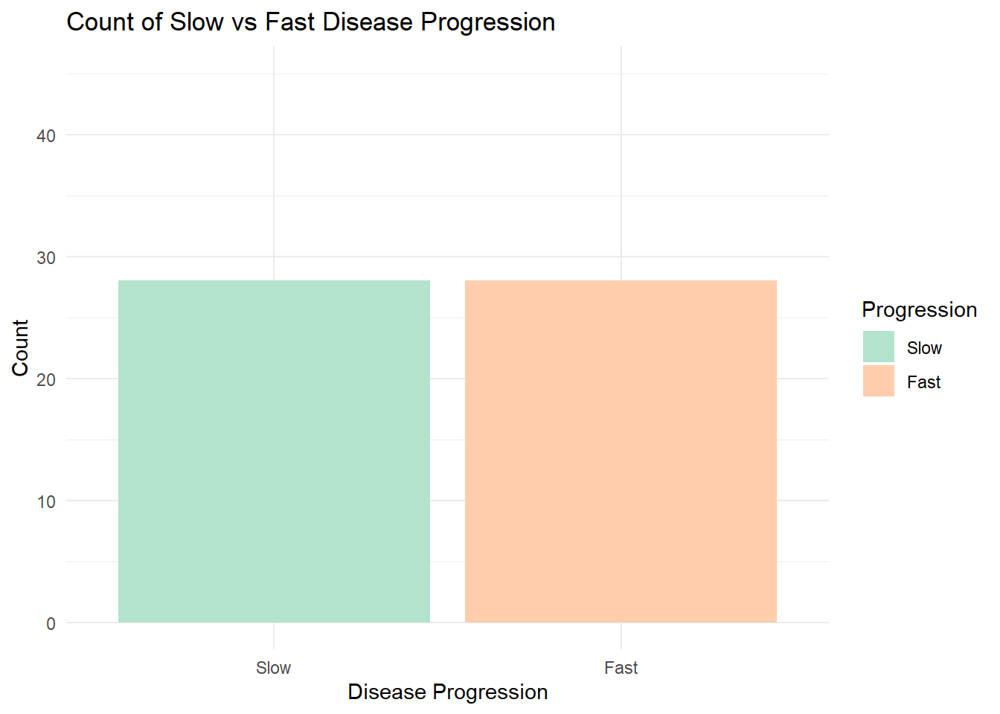
# Create Table
table(data1_train$progression)
Slow Fast
28 28 We have an equal amount of patients that had slow vs fast disease progression.
Summary
Kidney Volume Change
kidvol_change is approximately normally distributed following a log transform, with 2 potential outliers we will keep an eye on.
Slow vs Fast Disease Progression
We have an even count between patients who had slow vs fast disease progression.
Feature Engineering I
An assumption for a linear regression is that there is a linear relationship between the predictor and the outcome variable.
Thus for the initial step, we will examine the distribution of our variables and create a quadratic term or take the log for each variable as necessary.
# Create histogram
hist_plot <- ggplot(data1_train, aes(x = geom1)) +
geom_histogram(binwidth = 30) +
theme_minimal() +
labs(title = "Histogram of Geom1",
x = "Geom1",
y = "Count")
# Create qqplot
qq_plot <- ggplot(data1_train, aes(sample = geom1)) +
geom_qq() +
geom_qq_line() +
theme_minimal() +
labs(title = "QQ Plot of Geom1")
# Plot side by side
grid.arrange(hist_plot, qq_plot, ncol = 2)
There is 1 patient with a drastically lower value than everyone else. Let’s examine.
# Filter to most negative geom1 value
data1_train |>
arrange(geom1) |>
select(Subject_ID, geom1, geom2) |>
head() |>
pretty_print()| Subject_ID | geom1 | geom2 |
|---|---|---|
| 48 | -124.26679 | 15442.236 |
| 7 | -59.49517 | 3539.675 |
| 16 | -53.66873 | 2880.333 |
| 66 | -53.22180 | 2832.560 |
| 69 | -46.48719 | 2161.059 |
| 51 | -43.39304 | 1882.956 |
Patient 48 appears to be an outlier on geom1.
Perform Yeo Johnson Transformation
Since we have negatie we have to perform the yeo johnson transformation or we will lose observations as NA values.
# Use bestNormalize R package to select the best transformation
BNObject <- bestNormalize(data1_train$geom1)
BNObjectBest Normalizing transformation with 56 Observations
Estimated Normality Statistics (Pearson P / df, lower => more normal):
- arcsinh(x): 3.3087
- Center+scale: 1.9827
- Double Reversed Log_b(x+a): 2.4733
- Exp(x): 4.596
- Log_b(x+a): 1.396
- orderNorm (ORQ): 1.5187
- sqrt(x + a): 1.65
- Yeo-Johnson: 1.78
Estimation method: Out-of-sample via CV with 10 folds and 5 repeats
Based off these, bestNormalize chose:
Standardized Log_b(x + a) Transformation with 56 nonmissing obs.:
Relevant statistics:
- a = 124.2678
- b = 10
- mean (before standardization) = 1.998683
- sd (before standardization) = 0.6974149 # Create histogram
hist_plot <- ggplot(data1_train, aes(x = yeojohnson(geom1)$x.t)) +
geom_histogram(binwidth = .4) +
theme_minimal() +
labs(title = "Histogram of Yeo Johnson Geom1",
y = "Count",
x = "Log Geom1")
# Create qqplot
qq_plot <- ggplot(data1_train, aes(sample = yeojohnson(geom1)$x.t)) +
geom_qq() +
geom_qq_line() +
theme_minimal() +
labs(title = "QQ Plot of Yeo Johnson Geom1")
# Plot side by side
grid.arrange(hist_plot, qq_plot, ncol = 2)
# Perform transform
data1_train <- data1_train |>
mutate(geom1_yeo = yeojohnson(geom1)$x.t)geom is more normally distributed after a Yeo Johnson transform.
Summary
geom1 is normally distributed following a Yeo Johnson transform. There is potentially one outlier on the negative side, but this seemed to not be a factor after transforming.
# Create histogram
hist_plot <- ggplot(data1_train, aes(x = geom2)) +
geom_histogram(binwidth = 300) +
theme_minimal() +
labs(title = "Histogram of Geom2",
x = "Geom2",
y = "Count")
# Create qqplot
qq_plot <- ggplot(data1_train, aes(sample = geom2)) +
geom_qq() +
geom_qq_line() +
theme_minimal() +
labs(title = "QQ Plot of Geom2")
# Plot side by side
grid.arrange(hist_plot, qq_plot, ncol = 2)
geom2 appears to be logarithmic. Let’s adjust.
Square Root Transformation
# Create new variable
data1_train <- data1_train |>
mutate(geom2_sqrt = sqrt(geom2),
geom2_log = log(geom2))
# Create histogram
hist_plot <- ggplot(data1_train, aes(x = geom2_sqrt)) +
geom_histogram(binwidth = 20) +
theme_minimal() +
labs(title = "Histogram of Geom2_sqrt",
x = "Geom2_sqrt",
y = "Count")
# Create qqplot
qq_plot <- ggplot(data1_train, aes(sample = geom2_sqrt)) +
geom_qq() +
geom_qq_line() +
theme_minimal() +
labs(title = "QQ Plot of Geom2_sqrt")
# Plot side by side
grid.arrange(hist_plot, qq_plot, ncol = 2)
Sqrt kind of makes it better, but not quite.
Log Transformation
Let’s examine the log.
# Create histogram
hist_plot <- ggplot(data1_train, aes(x = log(geom2))) +
geom_histogram(binwidth = 1) +
theme_minimal() +
labs(title = "Histogram of Geom2 log",
x = "Geom2 log",
y = "Count")
# Create qqplot
qq_plot <- ggplot(data1_train, aes(sample = log(geom2))) +
geom_qq() +
geom_qq_line() +
theme_minimal() +
labs(title = "QQ Plot of Geom2 log")
# Plot side by side
grid.arrange(hist_plot, qq_plot, ncol = 2)
Yeo Johnson Transform
A Yeo Johnson transformation
# Use bestNormalize R package to select the best transformation
BNObject <- bestNormalize(data1_train$geom2)
BNObjectBest Normalizing transformation with 56 Observations
Estimated Normality Statistics (Pearson P / df, lower => more normal):
- arcsinh(x): 1.7313
- Box-Cox: 1.8647
- Center+scale: 3.9007
- Double Reversed Log_b(x+a): 4.1427
- Log_b(x+a): 1.7467
- orderNorm (ORQ): 1.7467
- sqrt(x + a): 2.2773
- Yeo-Johnson: 1.7813
Estimation method: Out-of-sample via CV with 10 folds and 5 repeats
Based off these, bestNormalize chose:
Standardized asinh(x) Transformation with 56 nonmissing obs.:
Relevant statistics:
- mean (before standardization) = 7.243183
- sd (before standardization) = 2.168931 # Create histogram
hist_plot <- ggplot(data, aes(x = yeojohnson(geom2)$x.t)) +
geom_histogram(binwidth = 1) +
theme_minimal() +
labs(title = "Histogram of Geom2 Yeo",
x = "Geom2 Yeo",
y = "Count")
# Create qqplot
qq_plot <- ggplot(data, aes(sample = yeojohnson(geom2)$x.t)) +
geom_qq() +
geom_qq_line() +
theme_minimal() +
labs(title = "QQ Plot of Geom2 Yeo")
# Plot side by side
grid.arrange(hist_plot, qq_plot, ncol = 2)
# Create the variable
data1_train <- data1_train |>
mutate(geom2_yeo = yeojohnson(geom2)$x.t)I think log or yeo is our best bet here.
Summary
While there is no transformation that makes geom2 normally distributed, log or yeojohnson transformation may help and will be considered. Let’s select Yeo Johnson as it looks slightly better.
# Create histogram
hist_plot <- ggplot(data1_train, aes(x = gabor1)) +
geom_histogram(binwidth = 0.2) +
theme_minimal() +
labs(title = "Histogram of Gabor1",
x = "Gabor2",
y = "Count")
# Create qqplot
qq_plot <- ggplot(data1_train, aes(sample = gabor1)) +
geom_qq() +
geom_qq_line() +
theme_minimal() +
labs(title = "QQ Plot of Gabor1")
# Plot side by side
grid.arrange(hist_plot, qq_plot, ncol = 2)
gabor1 is normally distributed.
# Make plots
distr_plots(data1_train, "gabor2", 12)Warning: `aes_string()` was deprecated in ggplot2 3.0.0.
ℹ Please use tidy evaluation idioms with `aes()`.
ℹ See also `vignette("ggplot2-in-packages")` for more information.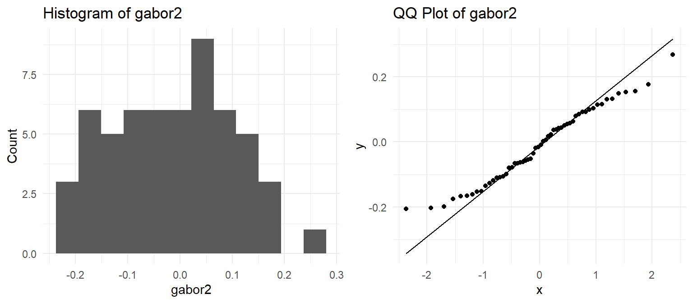
gabor2 appears approximately normally distributed.
# Use bestNormalize R package to select the best transformation
BNObject <- bestNormalize(data1_train$gabor2)
BNObjectBest Normalizing transformation with 56 Observations
Estimated Normality Statistics (Pearson P / df, lower => more normal):
- arcsinh(x): 1.402
- Center+scale: 1.402
- Double Reversed Log_b(x+a): 1.1913
- Exp(x): 1.2947
- Log_b(x+a): 2.104
- orderNorm (ORQ): 1.616
- sqrt(x + a): 1.5867
- Yeo-Johnson: 1.502
Estimation method: Out-of-sample via CV with 10 folds and 5 repeats
Based off these, bestNormalize chose:
Standardized double reversed Log_b(x + a) Transformation with 56 nonmissing obs.:
Relevant statistics:
- a =
- b = 10
- max(x) = 0.3151444 ; min(x) = -0.2533082
- mean (before standardization) = 0.2727949
- sd (before standardization) = 0.1871679 It looks like a yeo johnson transformation will be most appropriate here.
data1_train <- data1_train |>
mutate(gabor2_yeo = yeojohnson(gabor2)$x.t)
distr_plots(data1_train, "gabor2_yeo", 10)
A yeo johnson transformation slightly improves the normality of gabor2.
# Make plots
distr_plots(data1_train, "gabor3", 30)
gabor3 appears approximately normally distributed, with some potential outliers.
# Use bestNormalize R package to select the best transformation
BNObject <- bestNormalize(data1_train$gabor3)
BNObjectBest Normalizing transformation with 56 Observations
Estimated Normality Statistics (Pearson P / df, lower => more normal):
- arcsinh(x): 1.6907
- Center+scale: 1.6907
- Double Reversed Log_b(x+a): 1.4893
- Exp(x): 1.6907
- Log_b(x+a): 1.744
- orderNorm (ORQ): 1.6227
- sqrt(x + a): 1.5147
- Yeo-Johnson: 1.7907
Estimation method: Out-of-sample via CV with 10 folds and 5 repeats
Based off these, bestNormalize chose:
Standardized double reversed Log_b(x + a) Transformation with 56 nonmissing obs.:
Relevant statistics:
- a =
- b = 10
- max(x) = 0.08391221 ; min(x) = -0.0643589
- mean (before standardization) = 0.2611926
- sd (before standardization) = 0.1237591 Transformations don’t seem to help much here. We want the values to be closest to 1 to indicate more normality.
Summary
Transformation doesn’t seem to help much with gabor3.
# Make plots
distr_plots(data1_train, "gabor4", 30)
gabor4 may be exponential.
data1_train <- data1_train |>
mutate(gabor4_log = log(gabor4))
distr_plots(data1_train, "gabor4_log", 12)
gabor4_log appears to be normally distributed.
Summary
The log transform of gabor4 made it approximately normal.
# Make plots
distr_plots(data1_train, "gabor5", 30)
gabor5 looks logarithmic potentially.
Log Transform
# Use bestNormalize R package to select the best transformation
BNObject <- bestNormalize(data1_train$gabor5)
BNObjectBest Normalizing transformation with 56 Observations
Estimated Normality Statistics (Pearson P / df, lower => more normal):
- arcsinh(x): 1.8227
- Box-Cox: 1.274
- Center+scale: 1.8227
- Double Reversed Log_b(x+a): 2.138
- Exp(x): 1.8227
- Log_b(x+a): 1.4367
- orderNorm (ORQ): 1.3267
- sqrt(x + a): 1.3587
- Yeo-Johnson: 1.742
Estimation method: Out-of-sample via CV with 10 folds and 5 repeats
Based off these, bestNormalize chose:
Standardized Box Cox Transformation with 56 nonmissing obs.:
Estimated statistics:
- lambda = 0.2934285
- mean (before standardization) = -2.58858
- sd (before standardization) = 0.3299984 # Create log term
data1_train <- data1_train |>
mutate(gabor5_log = log(gabor5))
distr_plots(data1_train, "gabor5_log", 30)That’s kind of better.
# Calculate IQR and identify outliers
IQR_val <- IQR(data1_train$gabor5_log)
Q1 <- quantile(data1_train$gabor5_log, 0.25)
Q3 <- quantile(data1_train$gabor5_log, 0.75)
lower_bound <- Q1 - (1.5*IQR_val)
upper_bound <- Q3 + (1.5*IQR_val)
# Create boxplot and flag outliers
ggplot(data1_train, aes(x = "", y = gabor5_log)) +
geom_boxplot(alpha = 0.8) +
geom_text(aes(label = ifelse(gabor5_log < lower_bound | gabor5_log > upper_bound, Subject_ID, "")), hjust = -0.5, color = "red") +
theme_minimal() +
labs(title = "Boxplot of Gabor5",
x = "",
y = "Gabor5")
Summary
gabor5 is not normally distributed, and no transform seems to help much. It may be dropped from consideration.
GLCM1
# Make plots
distr_plots(data1_train, "glcm1", 10)
glcm1 is approximately normally distributed.
GLCM2
# Make plots
distr_plots(data1_train, "glcm2", 10)
glcm2 may be logarithmic.
Log Transform
# Create log variable
data1_train <- data1_train |>
mutate(glcm2_log = log(glcm2))
#| fig-height: 3.5
#| fig-width: 8
# Make plots
distr_plots(data1_train, "glcm2_log", 10)
# Use bestNormalize R package to select the best transformation
BNObject <- bestNormalize(data1_train$glcm2)
BNObjectBest Normalizing transformation with 56 Observations
Estimated Normality Statistics (Pearson P / df, lower => more normal):
- arcsinh(x): 1.5713
- Box-Cox: 1.4393
- Center+scale: 2.778
- Double Reversed Log_b(x+a): 3.388
- Log_b(x+a): 1.5713
- orderNorm (ORQ): 1.7147
- sqrt(x + a): 1.6827
- Yeo-Johnson: 1.4393
Estimation method: Out-of-sample via CV with 10 folds and 5 repeats
Based off these, bestNormalize chose:
Standardized Box Cox Transformation with 56 nonmissing obs.:
Estimated statistics:
- lambda = 0.245653
- mean (before standardization) = 105.7341
- sd (before standardization) = 37.69292 It appears that this is the best transformation we will get.
Summary
The best transformation for glcm2 is a log transform.
# Make plots
distr_plots(data1_train, "txti1", 10)
Summary
txti1 appears normally distributed
# Make plots
distr_plots(data1_train, "txti2", 10)
Summary
txti2 appears normally distributed.
# Make plots
distr_plots(data1_train, "txti3", 10)Summary
txti3 appears normally distributed.
# Make plots
distr_plots(data1_train, "txti4", 10)
txti4 may be logarithmic.
Log Transform
data1_train <- data1_train |>
mutate(txti4_log = log(txti4))
# Make plots
distr_plots(data1_train, "txti4_log", 10)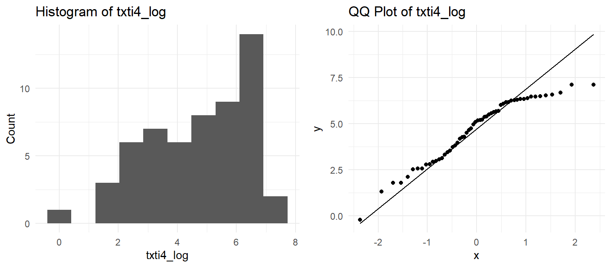
That’s better, still not perfect.
# Use bestNormalize R package to select the best transformation
BNObject <- bestNormalize(data1_train$txti4)
BNObjectBest Normalizing transformation with 56 Observations
Estimated Normality Statistics (Pearson P / df, lower => more normal):
- arcsinh(x): 1.8187
- Box-Cox: 1.57
- Center+scale: 2.6113
- Double Reversed Log_b(x+a): 3.1647
- Log_b(x+a): 1.8187
- orderNorm (ORQ): 1.574
- sqrt(x + a): 1.442
- Yeo-Johnson: 1.62
Estimation method: Out-of-sample via CV with 10 folds and 5 repeats
Based off these, bestNormalize chose:
Standardized sqrt(x + a) Transformation with 56 nonmissing obs.:
Relevant statistics:
- a = 0
- mean (before standardization) = 13.72864
- sd (before standardization) = 9.201842 Log is better than sqrt so we will use log.
Summary
The best transformation for txtxi4 is log, though it is still not perfect.
distr_plots(data1_train, "txti5", 10)May be logarithmic.
Log Transform
data1_train <- data1_train |>
mutate(txti5_log = log(txti5))
#| # Make plots
distr_plots(data1_train, "txti5_log", 10)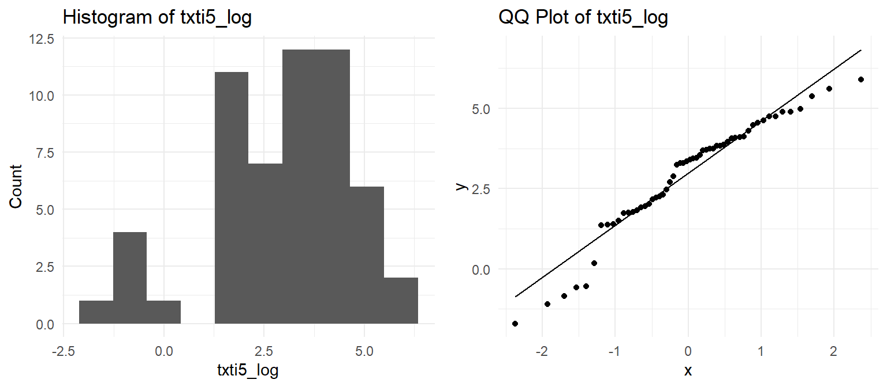
That looks better. Mostly.
# Use bestNormalize R package to select the best transformation
BNObject <- bestNormalize(data1_train$txti5)
BNObjectBest Normalizing transformation with 56 Observations
Estimated Normality Statistics (Pearson P / df, lower => more normal):
- arcsinh(x): 1.4227
- Box-Cox: 1.2587
- Center+scale: 2.5847
- Double Reversed Log_b(x+a): 2.79
- Exp(x): 4.2093
- Log_b(x+a): 1.4727
- orderNorm (ORQ): 1.624
- sqrt(x + a): 1.52
- Yeo-Johnson: 1.242
Estimation method: Out-of-sample via CV with 10 folds and 5 repeats
Based off these, bestNormalize chose:
Standardized Yeo-Johnson Transformation with 56 nonmissing obs.:
Estimated statistics:
- lambda = 0.09721794
- mean (before standardization) = 3.760793
- sd (before standardization) = 1.937912 Log performs better than sqrt, that’s as good as we can get.
Summary
The best transformation for txti5 is logarithmic.
distr_plots(data1_train, "lbp1", 20)Looks normally distributed with 1 outlier.
Remove Outlier
# Examine LBP outlier
data1_train |>
arrange(desc(lbp3)) |>
select(Subject_ID, lbp1, lbp2, lbp3, lbp4, lbp5) |>
head() |>
pretty_print()| Subject_ID | lbp1 | lbp2 | lbp3 | lbp4 | lbp5 |
|---|---|---|---|---|---|
| 52 | 9.7525713 | 1.1625327 | 11.3376835 | 95.1126464 | 1.3514824 |
| 14 | -1.0859087 | -0.8250696 | 0.8959503 | 1.1791977 | 0.6807399 |
| 61 | -1.2967552 | -0.6707632 | 0.8698157 | 1.6815740 | 0.4499233 |
| 28 | -0.5774531 | -0.8531963 | 0.4926809 | 0.3334521 | 0.7279439 |
| 40 | -0.5010965 | -0.8251542 | 0.4134818 | 0.2510977 | 0.6808794 |
| 7 | 0.3763026 | 0.7299012 | 0.2746638 | 0.1416037 | 0.5327558 |
Patient 52 is a CLEAR outlier (lbp3 = 11, no othe patients have an lbp3 over 1).
We remove them.
# Remove outlier patient
data1_train <- data1_train |>
filter(!Subject_ID == 52)Remake Plots
distr_plots(data1_train, "lbp1", 10)
That’s close to normal, let’s check if it could be better.
# Use bestNormalize R package to select the best transformation
BNObject <- bestNormalize(data1_train$lbp1)
BNObjectBest Normalizing transformation with 55 Observations
Estimated Normality Statistics (Pearson P / df, lower => more normal):
- arcsinh(x): 1.4007
- Center+scale: 1.5273
- Double Reversed Log_b(x+a): 2.018
- Exp(x): 2.1807
- Log_b(x+a): 2.1373
- orderNorm (ORQ): 1.3633
- sqrt(x + a): 1.6867
- Yeo-Johnson: 1.594
Estimation method: Out-of-sample via CV with 10 folds and 5 repeats
Based off these, bestNormalize chose:
orderNorm Transformation with 55 nonmissing obs and no ties
- Original quantiles:
0% 25% 50% 75% 100%
-1.784 -0.562 -0.246 0.023 1.363 Yeo Johnson Transform
It seems a yeo transformation will be the best (since we have negatives and a log and sqrt transformation will cause NA values)
# Perform transform
data1_train <- data1_train |>
mutate(lbp1_yeo = yeojohnson(lbp1)$x.t)
#| # Make plots
distr_plots(data1_train, "lbp1_yeo", 10)
It’s slightly better, but not by much.
Summary
A yeo johnson transformation helps a little bit.
We will choose to not transform this variable.
Note
Note: Patient 52 is a clear outlier and possibly erroneous value on the lbp features. Ensure to remove it from all data sets!
distr_plots(data1_train, "lbp2", 20)
We appear to have a different outlier for lbp2.
# Examine outlier
data1_train |>
arrange(desc(lbp2)) |>
select(Subject_ID, lbp1, lbp2, lbp3, lbp4, lbp5) |>
head() |>
pretty_print()| Subject_ID | lbp1 | lbp2 | lbp3 | lbp4 | lbp5 |
|---|---|---|---|---|---|
| 48 | -0.1337633 | 3.0589420 | -0.4091741 | 0.0178926 | 9.3571262 |
| 8 | -1.7843187 | 1.0797790 | -1.9266699 | 3.1837934 | 1.1659227 |
| 30 | -0.8565558 | 1.0250395 | -0.8780035 | 0.7336879 | 1.0507059 |
| 66 | -0.0191984 | 0.9612270 | -0.0184540 | 0.0003686 | 0.9239573 |
| 7 | 0.3763026 | 0.7299012 | 0.2746638 | 0.1416037 | 0.5327558 |
| 3 | -0.2515471 | 0.6778935 | -0.1705221 | 0.0632760 | 0.4595395 |
Patient 48 is an outlier on lbp2 (lbp2 = 3, all other patients are essentially below 1).
We remove them
# Remove outlier
data1_train <- data1_train |>
filter(!Subject_ID == 48)Remake Plots
distr_plots(data1_train, "lbp2", 20)lbp2 is normally distributed
distr_plots(data1_train, "lbp3", 20)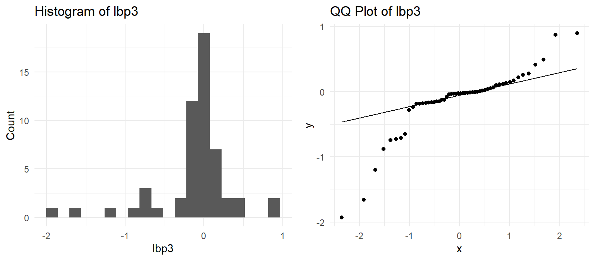
Doesn’t look too good.
# Use bestNormalize R package to select the best transformation
BNObject <- bestNormalize(data1_train$lbp3)
BNObjectBest Normalizing transformation with 54 Observations
Estimated Normality Statistics (Pearson P / df, lower => more normal):
- arcsinh(x): 2.3647
- Center+scale: 2.5773
- Double Reversed Log_b(x+a): 2.5847
- Exp(x): 2.3413
- Log_b(x+a): 2.93
- orderNorm (ORQ): 1.34
- sqrt(x + a): 2.532
- Yeo-Johnson: 2.6347
Estimation method: Out-of-sample via CV with 10 folds and 5 repeats
Based off these, bestNormalize chose:
orderNorm Transformation with 54 nonmissing obs and no ties
- Original quantiles:
0% 25% 50% 75% 100%
-1.927 -0.173 -0.025 0.061 0.896 None of the transformations help much here.
Summary
lbp3 is not normally distributed and no transformations help. We keep the original unmodified values.
distr_plots(data1_train, "lbp4", 20)lbp4 appears logarithmic.
# Create log variable
data1_train <- data1_train |>
mutate(lbp4_log = log(lbp4))
#| # Make plots
distr_plots(data1_train, "lbp4_log", 20)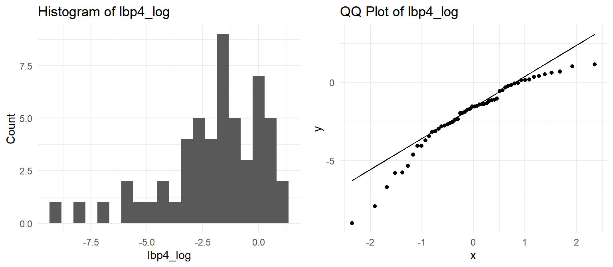
Looks better.
# Use bestNormalize R package to select the best transformation
BNObject <- bestNormalize(data1_train$lbp4)
BNObjectBest Normalizing transformation with 54 Observations
Estimated Normality Statistics (Pearson P / df, lower => more normal):
- arcsinh(x): 2.7933
- Box-Cox: 1.4373
- Center+scale: 3.0213
- Double Reversed Log_b(x+a): 3.4987
- Exp(x): 4.196
- Log_b(x+a): 1.5973
- orderNorm (ORQ): 1.7753
- sqrt(x + a): 1.7087
- Yeo-Johnson: 1.7753
Estimation method: Out-of-sample via CV with 10 folds and 5 repeats
Based off these, bestNormalize chose:
Standardized Box Cox Transformation with 54 nonmissing obs.:
Estimated statistics:
- lambda = 0.1878715
- mean (before standardization) = -1.381953
- sd (before standardization) = 1.378322 The log transform also provides the best performance here.
Summary
The log transform provides the best distribution for lbp4
Note
Note: Patient 48 is a clear outlier and possibly erroneous value on the lbp2 feature. Ensure to remove it from all data sets!
distr_plots(data1_train, "lbp5", 20)lbp5 looks logarithmic.
# Create log variable
data1_train <- data1_train |>
mutate(lbp5_log = log(lbp5))
#| # Make plots
distr_plots(data1_train, "lbp5_log", 15)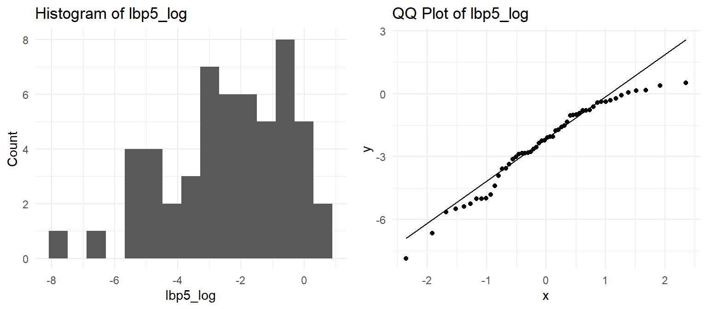
# Create variable
data1_train <- data1_train |>
mutate(lbp5_log = log(lbp5))# Use bestNormalize R package to select the best transformation
BNObject <- bestNormalize(data1_train$lbp5)
BNObjectBest Normalizing transformation with 54 Observations
Estimated Normality Statistics (Pearson P / df, lower => more normal):
- arcsinh(x): 2.6007
- Box-Cox: 1.568
- Center+scale: 2.5867
- Double Reversed Log_b(x+a): 3.0687
- Exp(x): 3.346
- Log_b(x+a): 1.6487
- orderNorm (ORQ): 1.8627
- sqrt(x + a): 1.9
- Yeo-Johnson: 2.0653
Estimation method: Out-of-sample via CV with 10 folds and 5 repeats
Based off these, bestNormalize chose:
Standardized Box Cox Transformation with 54 nonmissing obs.:
Estimated statistics:
- lambda = 0.1567344
- mean (before standardization) = -1.795011
- sd (before standardization) = 1.298534 Looks better, and we confirm that the log transform performs the best.
Summary
Log transform is the best for lbp5.
We determined that the following variables were approximately normally distributed after performing the transformations below: - kidvol_base_log - kidvol_change_log (this will be considered, but likely not used) - geom1_yeo - geom2_yeo - gabor2_yeo - gabor4_log - glcm2_log - txti4_log - txti5_log - lbp4_log - lbp5_log
These variables will be used for all comparisons moving forward to ensure we meet the assumption of linearity for a linear regression model.
gabor5 is not normal even after transforming.
We also eliminated 2 outlier/possible erroneous values in the form of patients, 48 and 52.
Correlation Matrix I
To assess for the best engineering of features and select the most promising covariates for this predictive model, I will create the following correlation matrices.
- With unaltered features & engineered features
- With averages and interactions to aggregate features from the same class
- With squared features
This process should uncover hidden relationships between features that are not immediately obvious (such as a squared feature being a significant predictor, but not in its original form).
This first matrix will contain the unaltered features in their original form, as well as the engineered features as determined by examination of distributions.
# Control matrix for better output
matrix_order <- c("kidvol_base", "kidvol_change", "kidvol_change_log", "progression", "geom1", "geom1_yeo", "geom2", "geom2_yeo", "gabor1", "gabor2", "gabor2_yeo", "gabor3", "gabor4", "gabor4_log", "gabor5", "glcm1", "glcm2", "glcm2_log", "txti1", "txti2", "txti3", "txti4", "txti4_log", "txti5", "txti5_log", "lbp1", "lbp2", "lbp3", "lbp4", "lbp4_log", "lbp5", "lbp5_log")
# Clean the output by making a trimmed dataset excluding extaneous variables
data_for_matrix <- data1_train |>
select(matrix_order)Warning: Using an external vector in selections was deprecated in tidyselect 1.1.0.
ℹ Please use `all_of()` or `any_of()` instead.
# Was:
data %>% select(matrix_order)
# Now:
data %>% select(all_of(matrix_order))
See <https://tidyselect.r-lib.org/reference/faq-external-vector.html>.# We factored our variables at the start. To make a correlation matrix we must reconvert those back to numeric
data_for_matrix <- data.frame(lapply(data_for_matrix, function(x) if (is.factor(x)) as.numeric(x) else x))
# Make a correlation matrix with all variables of the trimmed data set
correlation_matrix <- cor(data_for_matrix, use = "complete.obs")
# Plot correlation matrix
corrplot(correlation_matrix, method = "color", addCoef.col = "black", number.cex = 0.4, insig = "blank")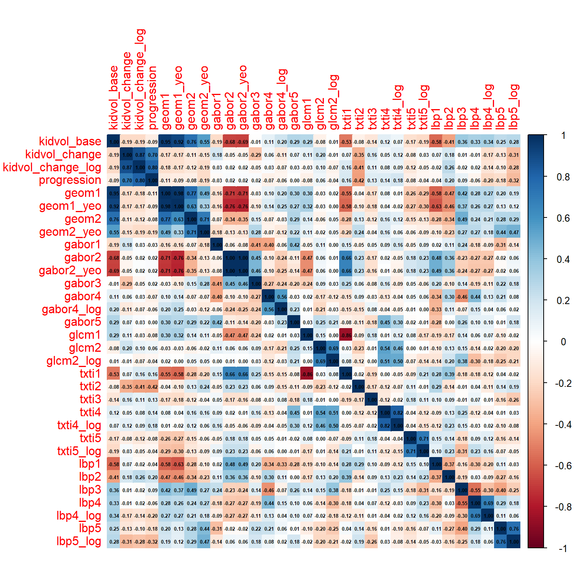
From this plot we can see a few relationships between our original and transformed features.
Main Observations
geom1 (r = -0.17) and geom2_yeo (r = -0.15) have about equal correlation with kidvol_change
None of the original or transformed gabor features are correlated to change in kidvol_change_log.
Interestingly, gabor3 appears to have a strong correlation to the untransformed kidvol_change, but not with kidvol_change_log. Let’s assess.
# Create plot
ggplot(data1_train, aes(x = gabor3, y = kidvol_change)) +
geom_smooth(method = "lm") +
geom_point() +
labs(title = "Change in Kidney Volume by Gabor3",
x = "Gabor3",
y = "Change in Kidney Volume (%)") +
theme_minimal()`geom_smooth()` using formula = 'y ~ x'This appears to be driven entirely by that outlier patient on the far left.
We previously determined that patients 37 and 51 were outliers on the boxplots on kidvol_change.
Let’s assess how this relationship changes after removing them.
# Remove outlier patients on kidvol change
data_out_rem <- data1_train |>
filter(!Subject_ID %in% c(37,51))
# Plot
ggplot(data_out_rem, aes(x = gabor3, y = kidvol_change)) +
geom_smooth(method = "lm") +
geom_point() +
labs(title = "Change in Kidney Volume by Gabor3",
x = "Gabor3",
y = "Change in Kidney Volume (%)") +
theme_minimal()`geom_smooth()` using formula = 'y ~ x'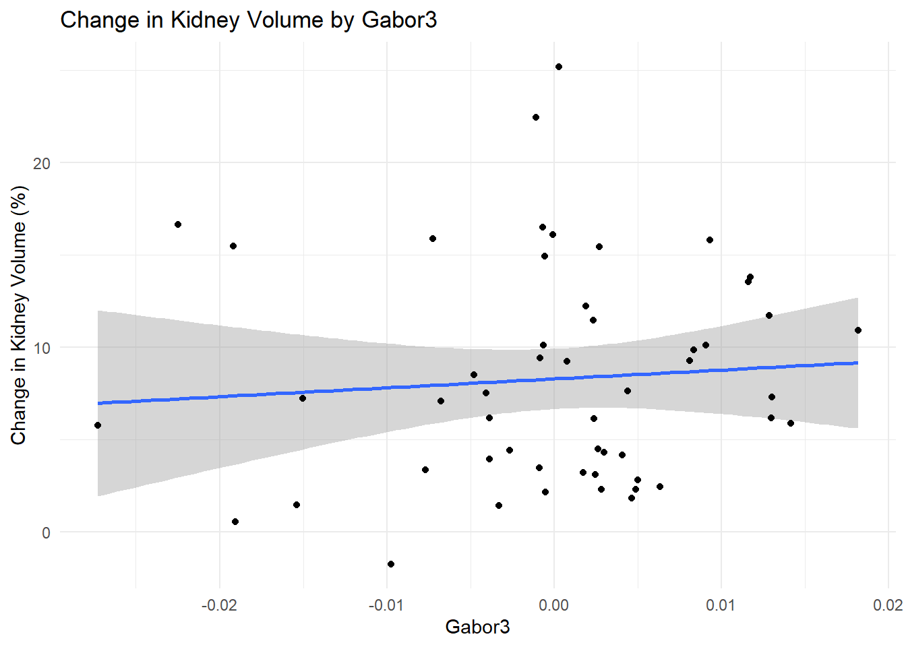
The relationship now looks appropriately linear when these outlier patients are removed.
We can also see that taking the log of the change in kidney volume reduces the influence of these outliers and makes the correlation non significant
# Create plot
ggplot(data1_train, aes(x = gabor3, y = kidvol_change_log)) +
geom_smooth(method = "lm") +
geom_point() +
labs(title = "Change in Log Kidney Volume by Gabor3",
x = "Gabor3",
y = "Change in Log Kidney Volume (%)") +
theme_minimal()`geom_smooth()` using formula = 'y ~ x'Warning: Removed 1 row containing non-finite outside the scale range
(`stat_smooth()`).Warning: Removed 1 row containing missing values or values outside the scale range
(`geom_point()`).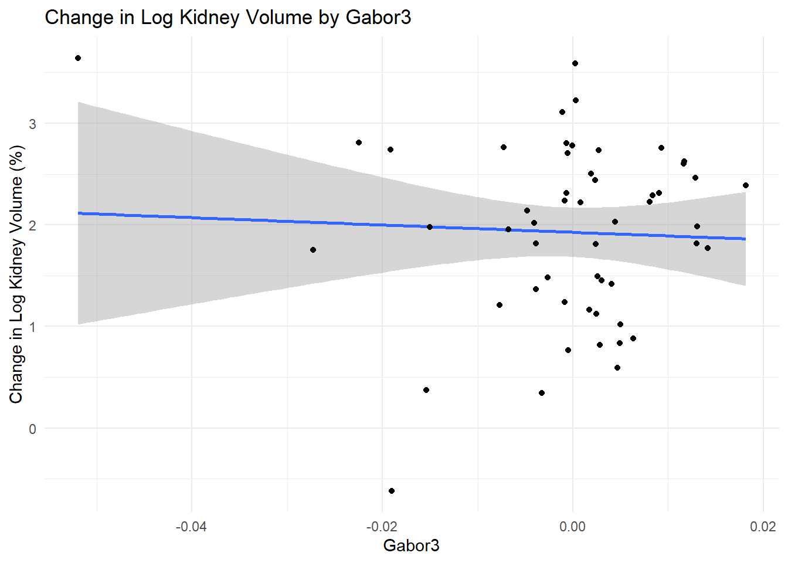
Note
Note: Patients 37 and 51 may be outliers and will need to be assessed using leverage and influence after the final model is fit!
None of the MRI features from the gray level co-occurence matrix were strongly correlated with kidvol_change.
txti2 is a strong predictor of change in kidvol regardless if whether kidvol is transformed or not.
# Create plot
ggplot(data1_train, aes(x = txti2, y = kidvol_change)) +
geom_smooth(method = "lm") +
geom_point() +
labs(title = "Change in Log Kidney Volume by Txti2",
x = "Txti2",
y = "Change in Log Kidney Volume (%)") +
theme_minimal()`geom_smooth()` using formula = 'y ~ x'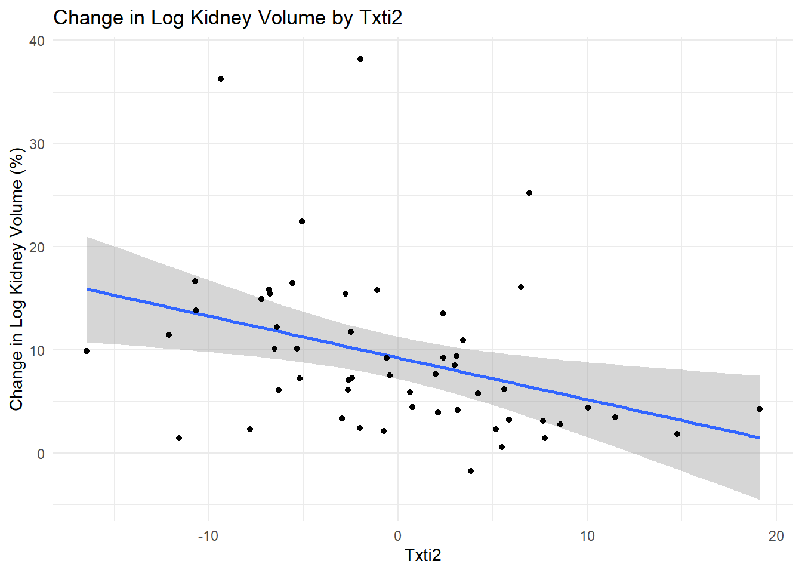
txti2 is a strong predictor of change in kidney volume!
Lbp2
lbp2 is weakly correlated to change in kidney volume.
# Create plot
ggplot(data1_train, aes(x = lbp2, y = kidvol_change)) +
geom_smooth(method = "lm") +
geom_point() +
labs(title = "Change in Log Kidney Volume by lbp2",
x = "lbp2",
y = "Change in Log Kidney Volume (%)") +
theme_minimal()`geom_smooth()` using formula = 'y ~ x'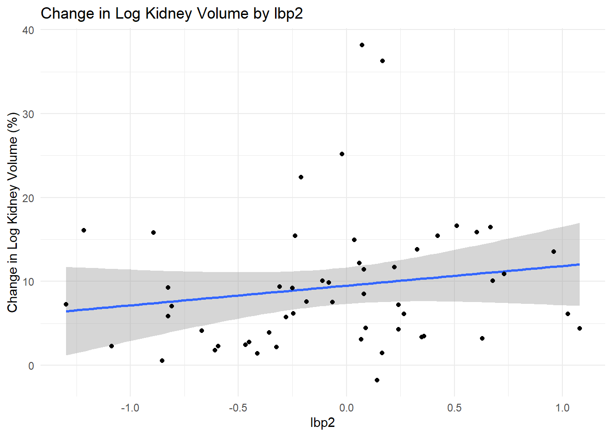
model <- lm(kidvol_change ~ lbp2, data = data1_train)
summary(model)
Call:
lm(formula = kidvol_change ~ lbp2, data = data1_train)
Residuals:
Min 1Q Median 3Q Max
-11.584 -5.786 -1.331 2.369 28.519
Coefficients:
Estimate Std. Error t value Pr(>|t|)
(Intercept) 9.502 1.085 8.754 0.00000000000837 ***
lbp2 2.343 1.945 1.205 0.234
---
Signif. codes: 0 '***' 0.001 '**' 0.01 '*' 0.05 '.' 0.1 ' ' 1
Residual standard error: 7.926 on 52 degrees of freedom
Multiple R-squared: 0.02716, Adjusted R-squared: 0.008455
F-statistic: 1.452 on 1 and 52 DF, p-value: 0.2337Lbp4
lbp4 after log transforming is weakly associated with change in kidney volume, but not strong enough to be significant.
# Create plot
ggplot(data1_train, aes(x = lbp4_log, y = kidvol_change)) +
geom_smooth(method = "lm") +
geom_point() +
labs(title = "Change in Log Kidney Volume by Lbp4",
x = "Log Lbp4",
y = "Change in Kidney Volume (%)") +
theme_minimal()`geom_smooth()` using formula = 'y ~ x'Lbp Log
lbp5_log is strongly correlated to change in kidney volume.
# Create plot
ggplot(data1_train, aes(x = lbp5_log, y = kidvol_change)) +
geom_smooth(method = "lm") +
geom_point() +
labs(title = "Change in Log Kidney Volume by Log Lbp5",
x = "Log Lbp5",
y = "Change in Log Kidney Volume (%)") +
theme_minimal()`geom_smooth()` using formula = 'y ~ x'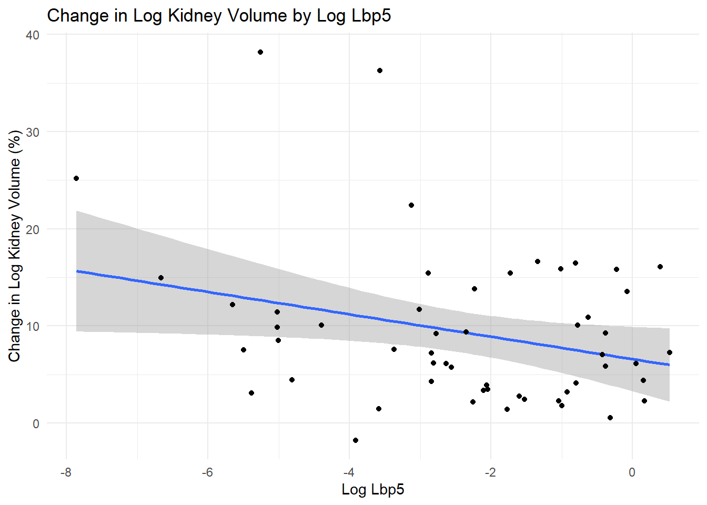
We have a pretty strong negative relationship here, looks like it is slightly driven by those two outlier patients.
Summary
The features that are most promising as covariates at this point are:
geom2_yeogabor3txt12lbp5_log
Feature Engineering II
Averages and Interaction Terms
We saw in the correlation matrix that both geom1 and geom2 had pretty even correlations with change in kidney volume.
In the interest of discovering underlying patterns (and minimizing the number of features we have, since we have a limit of 5 based on our sample size), I will attempt to collapse these two variables by
- Taking their average
- Taking their interaction term
I will also do the same for lbp2, and lbp5_log, which were correlated with the outcome.
Create Average and Interaction Terms
# Create average and interaction terms
data1_train <- data1_train |>
mutate(geom_avg = (geom1_yeo + geom2_yeo)/2,
geom_int = geom1_yeo*geom2_yeo,
lbp_avg = (lbp2 + lbp5_log),
lbp_int = lbp2*lbp5_log)Correlation Matrix II
Now we can rerun the correlation matrix and examine how those relationships changed
# Control matrix for better output
matrix_order <- c("kidvol_base", "kidvol_change", "kidvol_change_log", "progression", "geom1", "geom1_yeo", "geom2", "geom2_yeo", "geom_avg", "geom_int", "lbp1", "lbp2", "lbp3", "lbp4", "lbp4_log", "lbp5", "lbp5_log", "lbp_avg", "lbp_int")
# Clean the output by making a trimmed dataset excluding extaneous variables
data_for_matrix <- data1_train |>
select(matrix_order)
# We factored our variables at the start. To make a correlation matrix we must reconvert those back to numeric
data_for_matrix <- data.frame(lapply(data_for_matrix, function(x) if (is.factor(x)) as.numeric(x) else x))
# Make a correlation matrix with all variables of the trimmed data set
correlation_matrix <- cor(data_for_matrix, use = "complete.obs")
# Plot correlation matrix
corrplot(correlation_matrix, method = "color", addCoef.col = "black", number.cex = 0.6)
Main Observations
geom_avg (r = 0.20) has a higher correlation coefficient than geom1_yeo and geom2_yeo alone, and will thus be used as an aggregate covariate to capture the geometry of the MRIs going forward.
# Create plot
ggplot(data1_train, aes(x = geom_avg, y = kidvol_change)) +
geom_smooth(method = "lm") +
geom_point() +
labs(title = "Change in Kidney Volume by geom_avg",
x = "geom_avg",
y = "Change in Kidney Volume (%)") +
theme_minimal()`geom_smooth()` using formula = 'y ~ x'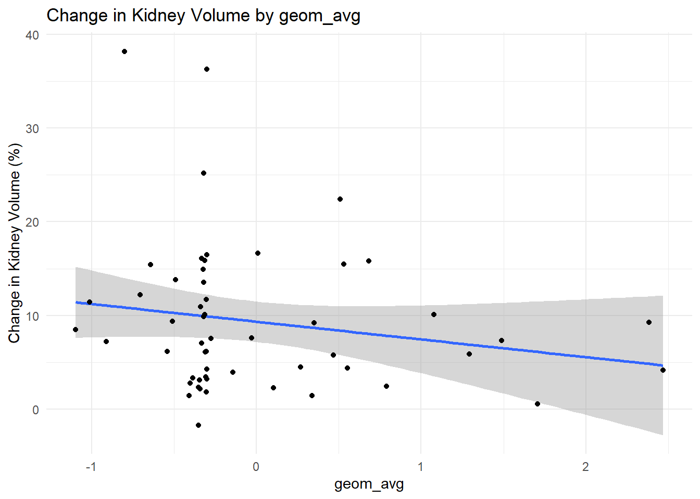
Notably, this could be driven by those two outliers as mentioned previously.
The average and interaction terms do not perform better than lbp5_log alone.
Summary
geom_avg increases the r by 0.03 over the individual non-combined features, and will be chosen as a candidate covariate.
lbp_avg does not perform better than lbp5_log alone, and thus lbp5_log will be chosen as a candidate covariate in the final model.
Feature Engineering III
Quadratic Terms
Finally, we will consider quadratic terms for each feature.
# Create function to square specified columns and rename the new variables
square_selected_variables <- function(df, columns) {
df <- df %>%
mutate(across(all_of(columns), ~ .^2, .names = "{.col}_square"))
return(df)
}
# Choose columns to get squared
columns <- data1_train |>
select(geom1, geom1_yeo, geom2, geom2_yeo, geom_avg, geom_int, gabor1, gabor2, gabor2_yeo, gabor3, gabor4, gabor4_log, gabor5, glcm1, glcm2, glcm2_log, txti1, txti2, txti3, txti4, txti4_log, txti5, txti5_log, lbp1, lbp2, lbp3, lbp4, lbp4_log, lbp5, lbp5_log, lbp_avg, lbp_int) |>
colnames()
# Square selected variables
data_square <- square_selected_variables(data1_train, columns)Correlation Matrix III
# Control matrix for better output
matrix_order <- c("kidvol_base", "kidvol_change", "kidvol_change_log", "progression", "geom1_square", "geom1_yeo_square", "geom2_square", "geom2_yeo_square", "geom_avg_square", "geom_int_square", "gabor1_square", "gabor2_square", "gabor2_yeo_square", "gabor3_square", "gabor4_square", "gabor4_log_square", "gabor5_square", "glcm1_square", "glcm2_square", "glcm2_log_square", "txti1_square", "txti2_square", "txti3_square", "txti4_square", "txti4_log_square", "txti5_square", "txti5_log_square", "lbp1_square", "lbp2_square", "lbp3_square", "lbp4_square", "lbp4_log_square", "lbp5_square", "lbp5_log_square", "lbp_avg_square", "lbp_int_square")
# Clean the output by making a trimmed dataset excluding extraneous variables
data_for_matrix2 <- data_square |>
select(matrix_order)
# We factored our variables at the start. To make a correlation matrix we must reconvert those back to numeric
data_for_matrix2 <- data.frame(lapply(data_for_matrix2, function(x) if (is.factor(x)) as.numeric(x) else x))
# Make a correlation matrix with all variables of the trimmed data set
correlation_matrix <- cor(data_for_matrix2, use = "complete.obs")
# Plot correlation matrix
corrplot(correlation_matrix, method = "color", addCoef.col = "black", number.cex = 0.2)
Main Observations
Gabor3
The correlation coefficient for gabor3_square is higher than gabor3.
ggplot(data_square, aes(x = gabor3_square, y = kidvol_change)) +
geom_point() +
geom_smooth(method = "lm")`geom_smooth()` using formula = 'y ~ x'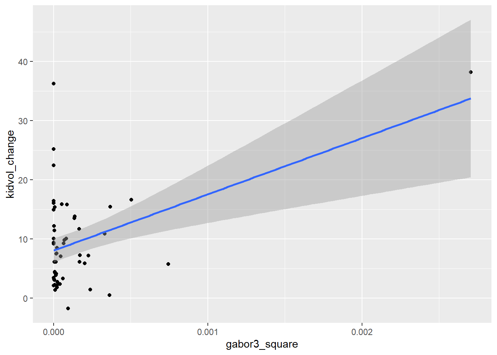
Let’s compare if we remove those outliers
ggplot(data_out_rem, aes(x = gabor3**2, y = kidvol_change)) +
geom_point() +
geom_smooth(method = "lm")`geom_smooth()` using formula = 'y ~ x'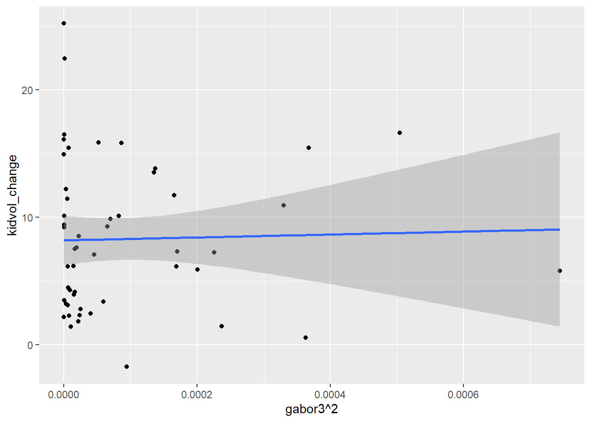
This appears to be driven by that outlier patient.
glcm2_square has a strong correlation (r = 0.31). Let’s examine.
# Create the plot
ggplot(data_square, aes(x = glcm2_square, y = kidvol_change)) +
geom_point() +
geom_smooth(method = "lm")`geom_smooth()` using formula = 'y ~ x'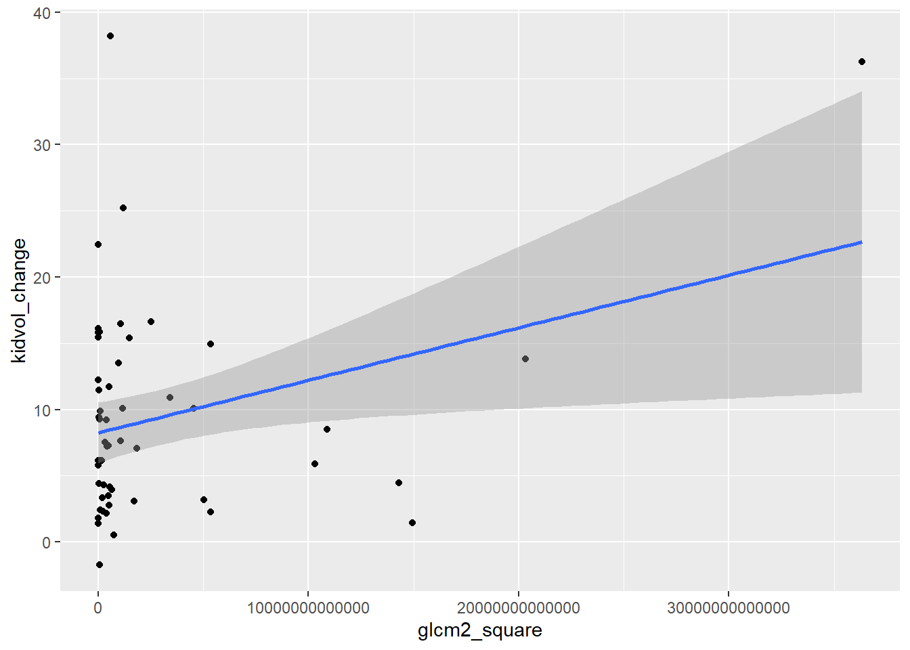
# Check the model
model <- lm(kidvol_change ~ glcm2**2, data = data1_train)
summary(model)
Call:
lm(formula = kidvol_change ~ glcm2^2, data = data1_train)
Residuals:
Min 1Q Median 3Q Max
-11.657 -5.766 -1.591 3.782 29.290
Coefficients:
Estimate Std. Error t value Pr(>|t|)
(Intercept) 7.8715892217 1.4117081716 5.576 0.000000892 ***
glcm2 0.0000013538 0.0000008435 1.605 0.115
---
Signif. codes: 0 '***' 0.001 '**' 0.01 '*' 0.05 '.' 0.1 ' ' 1
Residual standard error: 7.844 on 52 degrees of freedom
Multiple R-squared: 0.0472, Adjusted R-squared: 0.02888
F-statistic: 2.576 on 1 and 52 DF, p-value: 0.1146This could be driven by the outlier, but we will include glcm2_square as a covariate during model selection.
Summary
GLCM2_square will be considered as a potential covariate during model selection.
Feature Scaling
Before we perform our regression, we must standardize our variables to place them all on the same scale so that they contribute equally to the model.
This also makes it easier for the gradient descent process to converge faster and more efficiently.
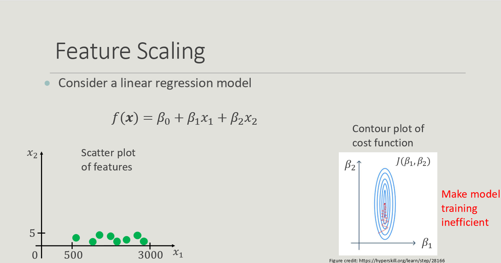

Perform Scaling
We will perform z norm scaling using caret, which will appropriately scale the test set of each fold using the mean and standard deviation of each respective training set.
Task One: Linear Regression
This website was used for coding guidance for the linear regression model.
Cost Function
The cost function in a linear regression is Root Mean Square Error (RMSE):
\[ \text{RMSE} = \sqrt{\frac{1}{n} \sum_{i=1}^{n} (y_i - \hat{y}_i)^2} \]
Where y is the actual change in outcome variable and y-hat is the predicted change, and n is the number of observations.
Mapping Function
In the case of linear regression, the mapping function is essentially each beta in the model.
Goal
The goal is to select a mapping function that minimizes the cost function and thereby produces the best predictions for the outcome variable.
We will be using the caret package to perform model training using 5-fold cross validation and Ordinary Least Squares (OLS). Another option is to perform gradient descent.
Model 1A: Baseline Kidney Volume
To answer the researcher’s first question for Task 1, we will perform a predictive model that uses the baseline height-corrected total kidney volume to predict percent change in kidney volume.
\[ Kidney Volume Change = 𝛽_0 + 𝛽_1*Log Kidney Volume Baseline + e \]
set.seed(123)
# Set up a 5-fold cross validation
tc <- trainControl(method = "cv", number = 5)
# Perform the linear regression using 5-fold CV
model1a <- train(kidvol_change ~ log(kidvol_base),
data = data,
method = "lm",
trControl = tc)
# Get RMSE
model1aLinear Regression
71 samples
1 predictor
No pre-processing
Resampling: Cross-Validated (5 fold)
Summary of sample sizes: 56, 56, 58, 58, 56
Resampling results:
RMSE Rsquared MAE
8.096326 0.05257111 6.192124
Tuning parameter 'intercept' was held constant at a value of TRUE# Get model coefficients
summary(model1a)
Call:
lm(formula = .outcome ~ ., data = dat)
Residuals:
Min 1Q Median 3Q Max
-16.166 -5.741 -1.240 3.758 27.000
Coefficients:
Estimate Std. Error t value Pr(>|t|)
(Intercept) 26.582 11.698 2.272 0.0262 *
`log(kidvol_base)` -2.987 2.028 -1.473 0.1453
---
Signif. codes: 0 '***' 0.001 '**' 0.01 '*' 0.05 '.' 0.1 ' ' 1
Residual standard error: 8.176 on 69 degrees of freedom
Multiple R-squared: 0.03049, Adjusted R-squared: 0.01644
F-statistic: 2.17 on 1 and 69 DF, p-value: 0.1453# Examine RSME and R Squared of each fold
pretty_print(model1a$resample)| RMSE | Rsquared | MAE | Resample |
|---|---|---|---|
| 9.164071 | 0.1296555 | 6.966941 | Fold1 |
| 8.938726 | 0.1208880 | 6.144274 | Fold2 |
| 9.002214 | 0.0078560 | 7.279776 | Fold3 |
| 6.777802 | 0.0009846 | 5.651400 | Fold4 |
| 6.598816 | 0.0034716 | 4.918228 | Fold5 |
The model has an RMSE of 8.10.
Actual vs Predicted Values
# Save predicted values to data set
data$predictions1a <- predict(model1a, newdata = data)
# Visualize predicted vs actual values
ggplot(data, aes(x = kidvol_change, y = predictions1a)) +
geom_point() +
geom_abline(intercept = 0, slope = 1, color = "blue", linetype = "dashed") +
theme_minimal() +
labs(title = "Predicted vs Actual Values for Baseline Kidney Volume",
x = "Actual Values",
y = "Predicted Values")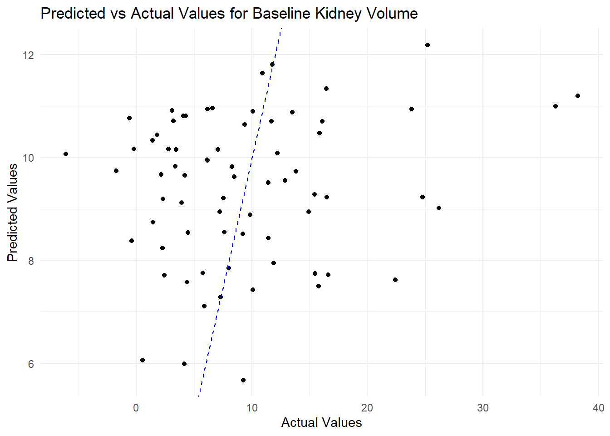
In a well performing model, the dots are close to a straight line (the blue dashed line), which would indicate perfect overlap between predicted and actual values.
Residuals
# Calculate the residuals
data$residuals1a <- data$kidvol_change - data$predictions1a
# Plot
ggplot(data, aes(x = predictions1a, y = residuals1a)) +
geom_point() +
geom_hline(yintercept = 0, color = "blue", linetype = "dashed") +
theme_minimal() +
labs(title = "Residuals for Baseline Kidney Volume",
x = "Predicted Values",
y = "Residuals")
There’s some pretty large differences in the predictions here, with some patients having predicted values that are 15% off or greater!
QQ Plot
# Plot QQ Plot
ggplot(data, aes(sample = residuals1a)) +
geom_qq() +
geom_qq_line() +
theme_minimal() +
labs(title = "QQ Plot of Model 1A")The QQ plot is almost normal, but not quite.
Histogram of Residuals
# Create histogram of residuals
ggplot(data, aes(x = residuals1a)) +
geom_histogram(bins = 20) +
labs(title = "Histogram of Residuals for Model 1A",
x = "Residuals",
y = "Count") +
theme_minimal()The residuals are almost normally distributed, but not quite.
the RMSE of the model including kidvol_base alone is 8.11
The model does not perform too well, when looking at the plots of the predicted vs actual values.
The assumption of normality is almost, but not quite, met.
Model 1B: MRI Features
To answer the researcher’s second question for Task 1, we will run a predictive model that uses only MRI image features to predict percent change in kidney volume at year 3.
\[ Kidney Volume Change = 𝛽_0 + 𝛽_1*Txti2 + e \]
Model Selection
Model selection will be performed on Fold 1 to avoid data snooping on the test set.
The potential scaled covariates for our final model after feature engineering and interactive variable selection are:
geom_avggabor3txti2lbp5_logglcm2_square
We will perform model selection using backwards elimination and BIC.
# Create variables
data1_train <- data1_train |>
mutate(geom_avg_scale = scale((geom1_yeo+geom2_yeo)/2),
gabor3_scale = scale(gabor3),
txti2_scale = scale(txti2),
lbp5_log_scale = scale(log(lbp5)),
glcm2_square_scale = scale(glcm2**2))
# First build the model with all variables
model1b <- lm(kidvol_change ~ geom_avg_scale + gabor3_scale + txti2_scale + lbp5_log_scale + glcm2_square_scale, data = data1_train)
summary(model1b)
Call:
lm(formula = kidvol_change ~ geom_avg_scale + gabor3_scale +
txti2_scale + lbp5_log_scale + glcm2_square_scale, data = data1_train)
Residuals:
Min 1Q Median 3Q Max
-17.458 -4.477 -1.072 2.927 18.913
Coefficients:
Estimate Std. Error t value Pr(>|t|)
(Intercept) 9.3544 0.9681 9.662 0.00000000000077 ***
geom_avg_scale -0.5476 1.0569 -0.518 0.6067
gabor3_scale -1.8407 1.0054 -1.831 0.0733 .
txti2_scale -2.0236 1.0275 -1.970 0.0547 .
lbp5_log_scale -1.0410 1.0918 -0.953 0.3451
glcm2_square_scale 1.9041 1.0320 1.845 0.0712 .
---
Signif. codes: 0 '***' 0.001 '**' 0.01 '*' 0.05 '.' 0.1 ' ' 1
Residual standard error: 7.114 on 48 degrees of freedom
Multiple R-squared: 0.2765, Adjusted R-squared: 0.2011
F-statistic: 3.668 on 5 and 48 DF, p-value: 0.006844# Perform backward elimination
ols_step_backward_sbc(model1b)
Stepwise Summary
-----------------------------------------------------------------------------
Step Variable AIC SBC SBIC R2 Adj. R2
-----------------------------------------------------------------------------
0 Full Model 372.792 386.715 221.016 0.27647 0.20110
1 geom_avg_scale 371.093 383.027 218.848 0.27242 0.21303
2 lbp5_log_scale 370.716 380.661 218.098 0.25023 0.20524
-----------------------------------------------------------------------------
Final Model Output
------------------
Model Summary
----------------------------------------------------------------
R 0.500 RMSE 6.828
R-Squared 0.250 MSE 46.621
Adj. R-Squared 0.205 Coef. Var 75.855
Pred R-Squared -0.235 AIC 370.716
MAE 5.016 SBC 380.661
----------------------------------------------------------------
RMSE: Root Mean Square Error
MSE: Mean Square Error
MAE: Mean Absolute Error
AIC: Akaike Information Criteria
SBC: Schwarz Bayesian Criteria
ANOVA
-------------------------------------------------------------------
Sum of
Squares DF Mean Square F Sig.
-------------------------------------------------------------------
Regression 840.194 3 280.065 5.562 0.0023
Residual 2517.532 50 50.351
Total 3357.727 53
-------------------------------------------------------------------
Parameter Estimates
-----------------------------------------------------------------------------------------------
model Beta Std. Error Std. Beta t Sig lower upper
-----------------------------------------------------------------------------------------------
(Intercept) 9.354 0.966 9.688 0.000 7.415 11.294
gabor3_scale -2.114 0.981 -0.266 -2.155 0.036 -4.084 -0.143
txti2_scale -2.200 1.016 -0.276 -2.165 0.035 -4.240 -0.159
glcm2_square_scale 2.076 1.018 0.261 2.040 0.047 0.032 4.121
-----------------------------------------------------------------------------------------------geom_avg and lbp5_log are removed based on BIC. AIC prefers the model with lbp5_log
However, we must note that we suspect patients 37 and 51 to be outliers on total kidney volume change, and we saw previously that the correlations for gabor3 and glcm2_square may be being driven by these outlier patients.
Perform 5-Fold Cross Validation
The final model selected via backwards elimination includes gabor3, txti2, and glcm2_square
set.seed(123)
# Create variables for original data set
data <- data |>
mutate(gabor3_scale = scale(gabor3),
txti2_scale = scale(txti2),
glcm2_square = glcm2**2,
glcm2_square_scale = scale(glcm2**2),
lbp5_log_scale = scale(log(lbp5)),
geom_avg_scale = scale(geom1+geom2)/2)
# Perform the linear regression using 5-fold CV
model1b <- train(kidvol_change ~ gabor3 + txti2 + glcm2_square,
data = data,
method = "lm",
trControl = tc,
preProc = "scale")
# Get RMSE
model1bLinear Regression
71 samples
3 predictor
Pre-processing: scaled (3)
Resampling: Cross-Validated (5 fold)
Summary of sample sizes: 56, 56, 58, 58, 56
Resampling results:
RMSE Rsquared MAE
9.032055 0.1690167 6.528863
Tuning parameter 'intercept' was held constant at a value of TRUE# Get model coefficients
summary(model1b)
Call:
lm(formula = .outcome ~ ., data = dat)
Residuals:
Min 1Q Median 3Q Max
-16.630 -4.574 -1.414 3.490 28.925
Coefficients:
Estimate Std. Error t value Pr(>|t|)
(Intercept) 9.0641 1.0337 8.768 0.000000000000996 ***
gabor3 0.1500 0.9800 0.153 0.8788
txti2 -2.2213 0.9844 -2.256 0.0273 *
glcm2_square 0.8494 0.9690 0.877 0.3838
---
Signif. codes: 0 '***' 0.001 '**' 0.01 '*' 0.05 '.' 0.1 ' ' 1
Residual standard error: 8.049 on 67 degrees of freedom
Multiple R-squared: 0.08767, Adjusted R-squared: 0.04681
F-statistic: 2.146 on 3 and 67 DF, p-value: 0.1026The RMSE is 9.03, worse than the model with kidvol_base alone.
Actual vs Predicted Values
# Save predicted valuest to data set
data$predictions1b <- predict(model1b, newdata = data)
# Visualize predicted vs actual values
ggplot(data, aes(x = kidvol_change, y = predictions1b)) +
geom_point() +
geom_abline(intercept = 0, slope = 1, color = "blue", linetype = "dashed") +
theme_minimal() +
labs(title = "Predicted vs Actual Values for MRI Features",
x = "Actual Values",
y = "Predicted Values")Residuals
# Calculate the residuals
data$residuals1b <- data$kidvol_change - data$predictions1b
# Plot
ggplot(data, aes(x = predictions1a, y = residuals1b)) +
geom_point() +
geom_hline(yintercept = 0, color = "blue", linetype = "dashed") +
theme_minimal() +
labs(title = "Residuals for MRI Features",
x = "Predicted Values",
y = "Residuals")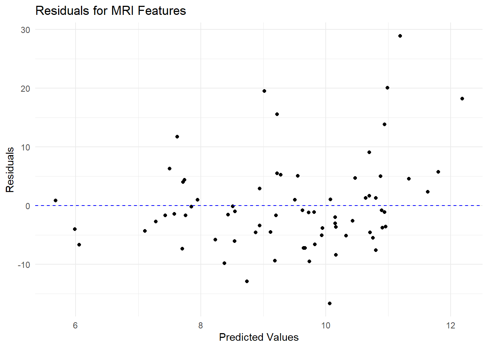
Our residuals are comparable in this model compared to modela 1A using kidvol_base alone. Some It appears that more residuals are closer to 0, but some predictions are as large as 30% off!
QQ Plot
# Plot QQ Plot
ggplot(data, aes(sample = residuals1b)) +
geom_qq() +
geom_qq_line() +
theme_minimal() +
labs(title = "QQ Plot of Model 1B")Histogram of Residuals
# Create histogram of residuals
ggplot(data, aes(x = residuals1b)) +
geom_histogram(bins = 20) +
labs(title = "Histogram of Residuals for Model 1B",
x = "Residuals",
y = "Count") +
theme_minimal()The cutoff for leverage (hat-value) is 2(p+1)/n, where p is the number of variables in the model, or 2(3+1)/71 = 0.112.
The cut off for Cook’s D > 1.0.
# Extract model
model1b_ext <- model1b$finalModel
# Influence plot
influence_measures <- influencePlot(model1b_ext, main = "Influence Plot",
sub = "Circle size is proportional to Cook's Distance")# Get row numbers of outliers
influence_measures StudRes Hat CookD
X2 3.205536 0.3120826 1.0236809
X8 4.481013 0.1736179 0.8208826
X9 3.131995 0.3212338 1.0257341
X35 -1.208289 0.4497401 0.2962813We have four clear outliers that are points of high leverage and influence.
Let’s identify them
# Identify outlier patients
outliers <- data[c(2, 8, 9, 35),]
# Pretty print
pretty_print(head(outliers))| Subject_ID | geom1 | geom2 | gabor1 | gabor2 | gabor3 | gabor4 | gabor5 | glcm1 | glcm2 | txti1 | txti2 | txti3 | txti4 | txti5 | lbp1 | lbp2 | lbp3 | lbp4 | lbp5 | kidvol_base | kidvol_visit2 | progression | kidvol_change | fold_number | predictions1a | residuals1a | gabor3_scale | txti2_scale | glcm2_square | glcm2_square_scale | lbp5_log_scale | geom_avg_scale | predictions1b | residuals1b |
|---|---|---|---|---|---|---|---|---|---|---|---|---|---|---|---|---|---|---|---|---|---|---|---|---|---|---|---|---|---|---|---|---|---|---|
| 51 | -43.393038 | 1882.95573 | 0.0047377 | 0.0544573 | 0.0002580 | 0.0000224 | 0.0029656 | 2454.8065 | 6026075.1 | -14.67151 | -9.355575 | 137.26039 | 215.2532 | 87.526780 | 0.1577583 | 0.1676594 | 0.0264497 | 0.0248877 | 0.0281097 | 185 | 387 | Fast | 36.28 | Fold2 | 10.989456 | 25.290543 | 0.01648347 | -1.3536710 | 36313581159049 | 4.4785466 | -0.4385074 | -0.06753985 | 16.224288 | 20.055712 |
| 37 | -3.860771 | 14.90555 | 0.2621932 | -0.1983384 | -0.0520030 | 0.0687453 | 0.0393381 | 871.6238 | 759728.0 | -14.72259 | -1.969424 | 28.99502 | 216.7546 | 3.878631 | -0.0557547 | 0.0722141 | -0.0040263 | 0.0031086 | 0.0052149 | 173 | 372 | Fast | 38.19 | Fold3 | 11.189771 | 27.000229 | -3.32238849 | -0.2849587 | 577186627450 | -0.3302081 | -1.1025159 | -0.22901595 | 9.264656 | 28.925344 |
| 52 | 77.054904 | 5937.45816 | 0.4598489 | 0.1556082 | 0.0715563 | 0.2114611 | 0.0242139 | -638.4451 | 407612.2 | 20.26785 | 9.686888 | 196.33234 | 410.7855 | 93.835797 | 9.7525713 | 1.1625327 | 11.3376835 | 95.1126464 | 1.3514824 | 358 | 640 | Fast | 26.18 | Fold4 | 9.017566 | 17.162434 | 4.57161897 | 1.4016092 | 166147673143 | -0.3855183 | 1.0880277 | 0.30114927 | 6.655437 | 19.524563 |
| 48 | -124.266792 | 15442.23561 | -0.1630575 | 0.0017660 | -0.0002880 | 0.0265878 | 0.0000031 | 2545.1960 | 6478022.6 | 6.41584 | 7.649503 | 49.07799 | 41.1630 | 58.514902 | -0.1337633 | 3.0589420 | -0.4091741 | 0.0178926 | 9.3571262 | 290 | 327 | Slow | 4.21 | Fold5 | 9.646765 | -5.436765 | -0.01839687 | 1.1068172 | 41964776184221 | 5.2389818 | 1.8507097 | 1.12273578 | 11.399413 | -7.189413 |
As predicted, patients 37 and 52 are points of high leverage and influence.
Also as identified before, patients 48 and 52 are points of high leverage and influence, which can be denoted by their absurdly high values for lbp1 and lbp2.
Since we previously identified that certain correlations such as with gabor3 and glcm2_square were being driven by these outlier patients, we will re-run model selection again using backwards elimination, with these patients removed.
Remove Outliers and Re-Run Variable Selection
We will perform backwards elimination again with outlier patients removed.
We can expect gabor3 and glcm2_square to be removed since their correlations were driven by these outliers, as identified in earlier plots.
# Remove outlier patients from data set
data1_train <- data1_train |>
filter(!Subject_ID %in% c(37, 48, 51, 52))
# Create model
model1b2 <- lm(kidvol_change ~ geom_avg_scale + gabor3_scale + txti2_scale + lbp5_log_scale + glcm2_square_scale, data = data1_train)
# Examine Model Summary
summary(model1b2)
Call:
lm(formula = kidvol_change ~ geom_avg_scale + gabor3_scale +
txti2_scale + lbp5_log_scale + glcm2_square_scale, data = data1_train)
Residuals:
Min 1Q Median 3Q Max
-9.3899 -3.2977 -0.9786 2.4046 15.9736
Coefficients:
Estimate Std. Error t value Pr(>|t|)
(Intercept) 8.1922 0.7809 10.491 0.0000000000000867 ***
geom_avg_scale -0.1844 0.8252 -0.223 0.82416
gabor3_scale 0.9018 0.9673 0.932 0.35609
txti2_scale -2.1787 0.8004 -2.722 0.00913 **
lbp5_log_scale -0.9964 0.8565 -1.163 0.25073
glcm2_square_scale -1.2907 1.1787 -1.095 0.27918
---
Signif. codes: 0 '***' 0.001 '**' 0.01 '*' 0.05 '.' 0.1 ' ' 1
Residual standard error: 5.538 on 46 degrees of freedom
Multiple R-squared: 0.1898, Adjusted R-squared: 0.1017
F-statistic: 2.155 on 5 and 46 DF, p-value: 0.07558# Perform backward elimination
ols_step_forward_sbc(model1b2)
Stepwise Summary
--------------------------------------------------------------------------
Step Variable AIC SBC SBIC R2 Adj. R2
--------------------------------------------------------------------------
0 Base Model 334.154 338.056 186.402 0.00000 0.00000
1 txti2_scale 328.649 334.503 181.305 0.13439 0.11708
--------------------------------------------------------------------------
Final Model Output
------------------
Model Summary
---------------------------------------------------------------
R 0.367 RMSE 5.384
R-Squared 0.134 MSE 28.989
Adj. R-Squared 0.117 Coef. Var 66.297
Pred R-Squared 0.067 AIC 328.649
MAE 4.093 SBC 334.503
---------------------------------------------------------------
RMSE: Root Mean Square Error
MSE: Mean Square Error
MAE: Mean Absolute Error
AIC: Akaike Information Criteria
SBC: Schwarz Bayesian Criteria
ANOVA
-------------------------------------------------------------------
Sum of
Squares DF Mean Square F Sig.
-------------------------------------------------------------------
Regression 234.037 1 234.037 7.763 0.0075
Residual 1507.420 50 30.148
Total 1741.457 51
-------------------------------------------------------------------
Parameter Estimates
----------------------------------------------------------------------------------------
model Beta Std. Error Std. Beta t Sig lower upper
----------------------------------------------------------------------------------------
(Intercept) 8.344 0.762 10.954 0.000 6.814 9.874
txti2_scale -2.136 0.767 -0.367 -2.786 0.008 -3.677 -0.596
----------------------------------------------------------------------------------------As predicted, when excluding these outlier patients, gabor3 and glcm2_square are no longer significant.
The only selected now using BIC is txti2!
Let’s perform 5-fold CV again using this model.
Remove Outliers
# Remove outlier patients from data set
data <- data |>
filter(!Subject_ID %in% c(37, 48, 51, 52))Perform Regression with 5-Fold Cross Validation
set.seed(123)
# Set up a 5-fold cross validation
tc <- trainControl(method = "cv", number = 5)
# Perform the linear regression using 5-fold CV
model1b2 <- train(kidvol_change ~ txti2,
data = data,
method = "lm",
trControl = tc,
preProc = "scale")
# Get RMSE
model1b2Linear Regression
67 samples
1 predictor
Pre-processing: scaled (1)
Resampling: Cross-Validated (5 fold)
Summary of sample sizes: 54, 55, 53, 55, 51
Resampling results:
RMSE Rsquared MAE
6.153724 0.171239 4.68434
Tuning parameter 'intercept' was held constant at a value of TRUE# Get model coefficients
summary(model1b2)
Call:
lm(formula = .outcome ~ ., data = dat)
Residuals:
Min 1Q Median 3Q Max
-15.6726 -3.5604 -0.5467 3.0722 18.8813
Coefficients:
Estimate Std. Error t value Pr(>|t|)
(Intercept) 8.3805 0.7661 10.939 0.000000000000000222 ***
txti2 -2.0443 0.7718 -2.649 0.0101 *
---
Signif. codes: 0 '***' 0.001 '**' 0.01 '*' 0.05 '.' 0.1 ' ' 1
Residual standard error: 6.27 on 65 degrees of freedom
Multiple R-squared: 0.09742, Adjusted R-squared: 0.08353
F-statistic: 7.016 on 1 and 65 DF, p-value: 0.01013The RMSE is now 6.15, drastically lower than with kidvol_base_log alone (but we need to rerun that model without outliers).
This model predicts 17.0% of the variance in kidvol_change.
Actual vs Predicted Values
# Save predicted valuest to data set
data$predictions1b2 <- predict(model1b2, newdata = data)
# Visualize predicted vs actual values
ggplot(data, aes(x = kidvol_change, y = predictions1b2)) +
geom_point() +
geom_abline(intercept = 0, slope = 1, color = "blue", linetype = "dashed") +
theme_minimal() +
labs(title = "Predicted vs Actual Values for TXTI2",
x = "Actual Values",
y = "Predicted Values")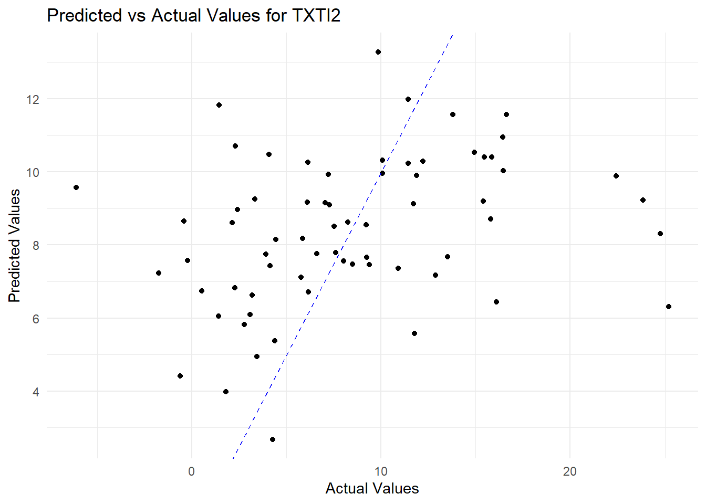
The predicted models are still not that close to the actual values.
Residuals
# Calculate the residuals
data$residuals1b2 <- data$kidvol_change - data$predictions1b2
# Plot residuals
ggplot(data, aes(x = predictions1b2, y = residuals1b2)) +
geom_point() +
geom_hline(yintercept = 0, color = "blue", linetype = "dashed") +
theme_minimal() +
labs(title = "Residuals for TXTI2",
x = "Predicted Values",
y = "Residuals")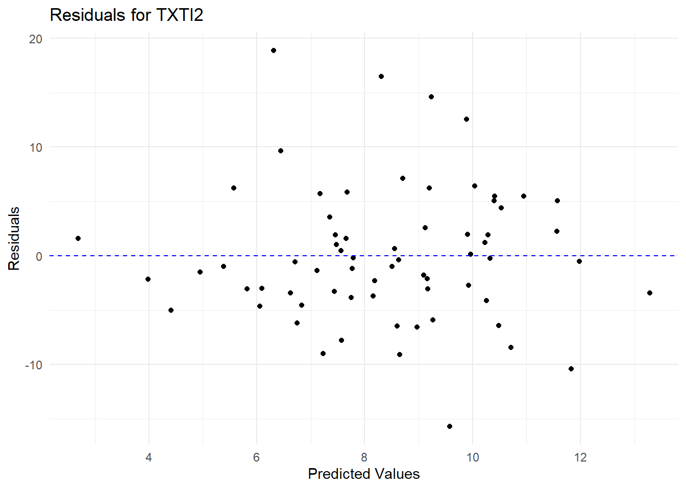
The residuals still look pretty large.
QQ Plot
# Plot QQ Plot
ggplot(data, aes(sample = residuals1b2)) +
geom_qq() +
geom_qq_line() +
theme_minimal() +
labs(title = "QQ Plot of TXTI2")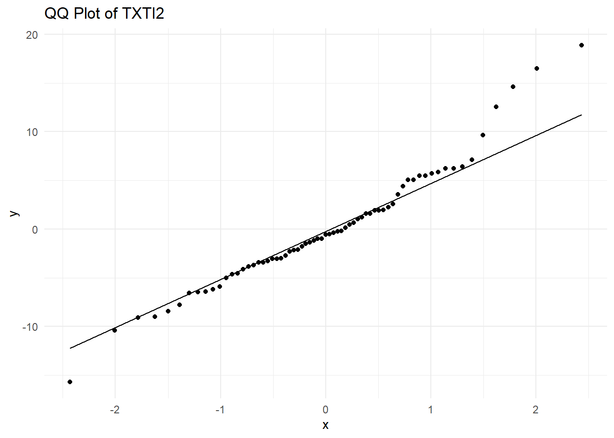
Histogram of Residuals
# Create histogram of residuals
ggplot(data, aes(x = residuals1b2)) +
geom_histogram(bins = 20) +
labs(title = "Histogram of Residuals for TXTI2",
x = "Residuals",
y = "Count") +
theme_minimal()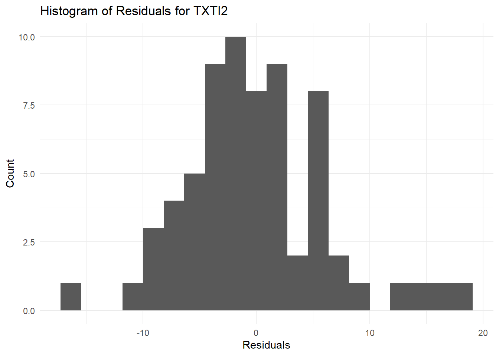
The residuals are now approximately normally distributed, and would be more so with a larger sample size.
Leverage and Influence
# Extract model
model1b2_ext <- model1b2$finalModel
# Influence plot
influence_measures <- influencePlot(model1b2_ext, main = "Influence Plot",
sub = "Circle size is proportional to Cook's Distance")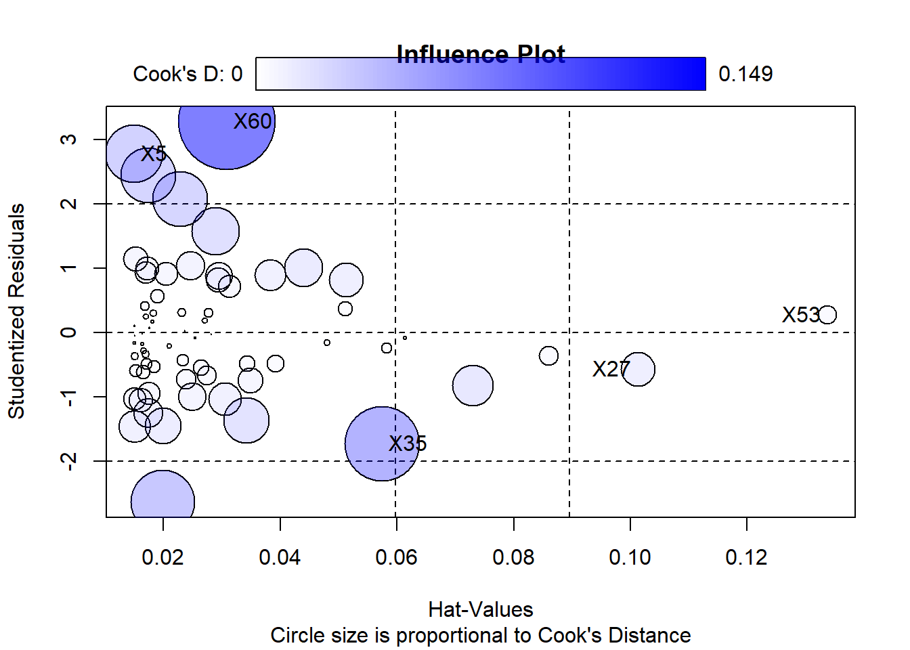
# Get row numbers of outliers
influence_measures StudRes Hat CookD
X5 2.7790166 0.01496267 0.053157442
X27 -0.5734689 0.10123968 0.018715616
X35 -1.7314354 0.05744408 0.088628443
X53 0.2718257 0.13375256 0.005786868
X60 3.2804634 0.03089234 0.149126512We no longer have outliers in this model as assessed by cutoffs using leverage and influence.
In this step we discovered that patiens 37, 48, 51, and 52 were outliers with high leverage and influence in our model.
After removing them, only txti2 was selected as an MRI image feature predicting change in kidney volume.
The RMSE for model 1B after removing outliers was 6.15
Model 1C: Baseline Kidney Volume and TXTI2
To answer the researcher’s third question, we will run a predictive model that uses the baseline height-corrected total kidney volume AND MRI image features to predict percent change in kidney volume.
\[ Kidney Volume Change = 𝛽_0 + 𝛽_{1}*Baseline Kidney Volume + 𝛽_{2}*Txti2 + e \]
set.seed(123)
# Perform the linear regression using 5-fold CV
model1c <- train(kidvol_change ~ log(kidvol_base) + txti2,
data = data,
method = "lm",
trControl = tc,
preProc = "scale",
metric = "RMSE")
# Get RMSE
model1cLinear Regression
67 samples
2 predictor
Pre-processing: scaled (2)
Resampling: Cross-Validated (5 fold)
Summary of sample sizes: 54, 55, 53, 55, 51
Resampling results:
RMSE Rsquared MAE
6.140875 0.2383243 4.643702
Tuning parameter 'intercept' was held constant at a value of TRUE# Get model coefficients
summary(model1c)
Call:
lm(formula = .outcome ~ ., data = dat)
Residuals:
Min 1Q Median 3Q Max
-16.3316 -3.5730 -0.3356 3.2914 17.0199
Coefficients:
Estimate Std. Error t value Pr(>|t|)
(Intercept) 21.2149 9.3480 2.269 0.02662 *
`log(kidvol_base)` -1.0820 0.7855 -1.378 0.17315
txti2 -2.2803 0.7855 -2.903 0.00506 **
---
Signif. codes: 0 '***' 0.001 '**' 0.01 '*' 0.05 '.' 0.1 ' ' 1
Residual standard error: 6.228 on 64 degrees of freedom
Multiple R-squared: 0.1234, Adjusted R-squared: 0.09601
F-statistic: 4.505 on 2 and 64 DF, p-value: 0.01477The RMSE for the combined model is 6.14, about the same as the model using just txti2 alone.
Actual Vs Predicted
# Save predicted valuest to data set
data$predictions1c <- predict(model1c, newdata = data)
# Visualize predicted vs actual values
ggplot(data, aes(x = kidvol_change, y = predictions1c)) +
geom_point() +
geom_abline(intercept = 0, slope = 1, color = "blue", linetype = "dashed") +
theme_minimal() +
labs(title = "Predicted vs Actual Values for Baseline Kidney Volumne and TXTI2",
x = "Actual Values",
y = "Predicted Values")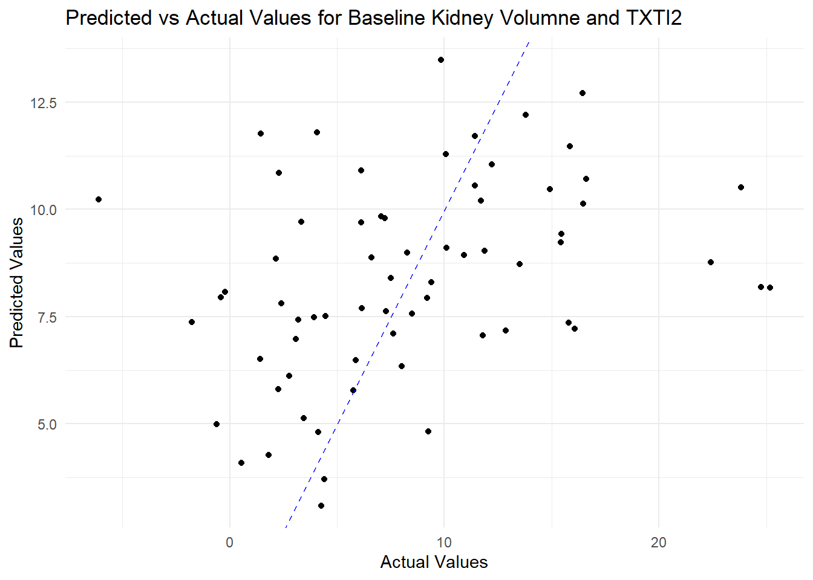
The model still does not have the best prediction.
Residuals
# Calculate the residuals
data$residuals1c <- data$kidvol_change - data$predictions1c
# Plot residuals
ggplot(data, aes(x = predictions1c, y = residuals1c)) +
geom_point() +
geom_hline(yintercept = 0, color = "blue", linetype = "dashed") +
theme_minimal() +
labs(title = "Residuals for Baseline Kidney Volume and TXTI2",
x = "Predicted Values",
y = "Residuals")The residuals are slightly better than the model with kidvol_base alone.
# Plot QQ Plot
ggplot(data, aes(sample = residuals1c)) +
geom_qq() +
geom_qq_line() +
theme_minimal() +
labs(title = "QQ Plot of Baseline Kidney Volume and TXTI2")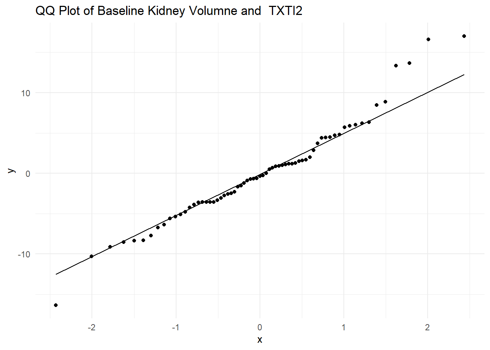
This is the best QQ plot we have had so far.
Histogram of Residuals
# Create histogram of residuals
ggplot(data, aes(x = residuals1c)) +
geom_histogram(bins = 20) +
labs(title = "Histogram of Residuals for Baseline Kidney Volume and TXTI2",
x = "Residuals",
y = "Count") +
theme_minimal()Leverage and Influence
# Extract model
model1c_ext <- model1c$finalModel
# Influence plot
influence_measures <- influencePlot(model1c_ext, main = "Influence Plot",
sub = "Circle size is proportional to Cook's Distance")# Get row numbers of outliers
influence_measures StudRes Hat CookD
X2 0.7595324 0.12618822 0.027954583
X5 2.8250641 0.01514097 0.036876777
X29 2.3152733 0.04010315 0.069889503
X53 0.2032994 0.13606032 0.002202691
X60 3.0216117 0.07797505 0.228366413There are no outliers (some edge cases but we will retain them)
Plot Final Model
# Plot final model
ggplot(data, aes(x = log(kidvol_base), y = kidvol_change)) +
geom_point() +
geom_smooth(method = "lm") +
labs(title = "Model 1C: Baseline Kidney Volume and Txti2",
x = "Baseline Kidney Volume (log)",
y = "Change in Kidney Volume (%)") +
theme_minimal()`geom_smooth()` using formula = 'y ~ x'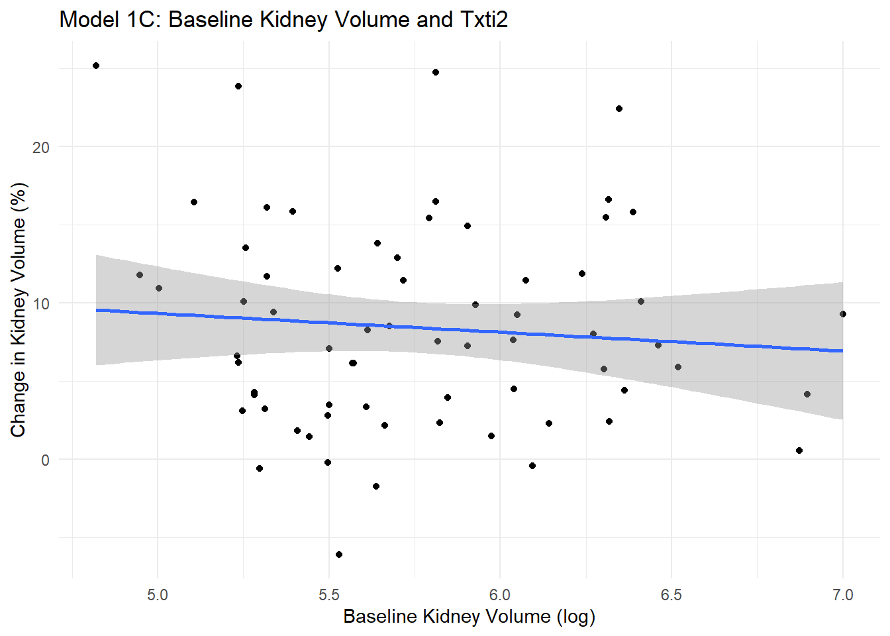
This plot shows that generally, the larger your kidney volume at baseline, the less of an increase there was in size over 3 years.
The RMSE for model 1C is 6.14, this is similar performance to model 1B.
Model 1C meets the assumptions of a linear regression (normality) the best.
Model Comparison
Here we will compare how models 1A, 1B, and 1C performed.
Note: We removed outliers over the course of our model inspection. Thus we will re-run each analysis to get the true RMSE for each model.
Model 1A
set.seed(123)
##### Model 1A
# Perform the linear regression using 5-fold CV
model1a <- train(kidvol_change ~ log(kidvol_base),
data = data,
method = "lm",
trControl = tc)
# Get RMSE
model1aLinear Regression
67 samples
1 predictor
No pre-processing
Resampling: Cross-Validated (5 fold)
Summary of sample sizes: 54, 55, 53, 55, 51
Resampling results:
RMSE Rsquared MAE
6.519605 0.04277987 5.194627
Tuning parameter 'intercept' was held constant at a value of TRUEModel 1B
set.seed(123)
##### Model 1B
# Perform the linear regression using 5-fold CV
model1b2 <- train(kidvol_change ~ txti2,
data = data,
method = "lm",
trControl = tc,
preProc = "scale")
# Get RMSE
model1b2Linear Regression
67 samples
1 predictor
Pre-processing: scaled (1)
Resampling: Cross-Validated (5 fold)
Summary of sample sizes: 54, 55, 53, 55, 51
Resampling results:
RMSE Rsquared MAE
6.153724 0.171239 4.68434
Tuning parameter 'intercept' was held constant at a value of TRUEModel 1C
set.seed(123)
# Perform the linear regression using 5-fold CV
model1c <- train(kidvol_change ~ log(kidvol_base) + txti2_scale,
data = data,
method = "lm",
trControl = tc)
# Get RMSE
model1cLinear Regression
67 samples
2 predictor
No pre-processing
Resampling: Cross-Validated (5 fold)
Summary of sample sizes: 54, 55, 53, 55, 51
Resampling results:
RMSE Rsquared MAE
6.140875 0.2383243 4.643702
Tuning parameter 'intercept' was held constant at a value of TRUEFinal Average RMSE
| Model | RMSE |
|---|---|
| 1A: Baseline Kidney Volume | 6.52 |
| 1B: Txti2 | 6.15 |
| 1C Baseline Kidney Volume and Txti2 | 6.14 |
Compare Model Performance
We can also use the caret package to compare perfomance between these three models.
Upper Diagonal Values: These are the differences in the metric values between models. Positive values mean the first model has a higher metric value, while negative values mean the first model has a lower metric value.
Lower Diagonal Values: These are the p-values from hypothesis tests comparing the metric values between models. Small p-values (typically < 0.05) indicate significant differences between the models for that metric.
# Create list of models to compare
model_list <- list(`Kidney Volume at Baseline` = model1a, `Txti2` = model1b2, `Kidney Volume at Baseline and Txti2` = model1c)
# Compare models
results <- resamples(model_list)
summary(results)
Call:
summary.resamples(object = results)
Models: Kidney Volume at Baseline, Txti2, Kidney Volume at Baseline and Txti2
Number of resamples: 5
MAE
Min. 1st Qu. Median Mean
Kidney Volume at Baseline 4.296977 5.268043 5.312707 5.194627
Txti2 3.442303 4.553295 4.891441 4.684340
Kidney Volume at Baseline and Txti2 3.282857 4.494957 4.952172 4.643702
3rd Qu. Max. NA's
Kidney Volume at Baseline 5.438730 5.656678 0
Txti2 5.203527 5.331133 0
Kidney Volume at Baseline and Txti2 5.112327 5.376196 0
RMSE
Min. 1st Qu. Median Mean
Kidney Volume at Baseline 5.426090 6.382835 6.398772 6.519605
Txti2 4.084323 6.119866 6.382093 6.153724
Kidney Volume at Baseline and Txti2 4.117591 5.917561 6.331809 6.140875
3rd Qu. Max. NA's
Kidney Volume at Baseline 6.857043 7.533286 0
Txti2 6.536207 7.646131 0
Kidney Volume at Baseline and Txti2 6.550354 7.787060 0
Rsquared
Min. 1st Qu. Median
Kidney Volume at Baseline 0.0003237652 0.02525581 0.03695319
Txti2 0.0177893816 0.04359540 0.10855879
Kidney Volume at Baseline and Txti2 0.0163224093 0.05880114 0.19970450
Mean 3rd Qu. Max. NA's
Kidney Volume at Baseline 0.04277987 0.05047119 0.1008954 0
Txti2 0.17123905 0.26687362 0.4193780 0
Kidney Volume at Baseline and Txti2 0.23832433 0.43143200 0.4853616 0# Compare the RMSEs
diffs <- diff(results)
summary(diffs)
Call:
summary.diff.resamples(object = diffs)
p-value adjustment: bonferroni
Upper diagonal: estimates of the difference
Lower diagonal: p-value for H0: difference = 0
MAE
Kidney Volume at Baseline Txti2
Kidney Volume at Baseline 0.51029
Txti2 0.05817
Kidney Volume at Baseline and Txti2 0.06738 1.00000
Kidney Volume at Baseline and Txti2
Kidney Volume at Baseline 0.55092
Txti2 0.04064
Kidney Volume at Baseline and Txti2
RMSE
Kidney Volume at Baseline Txti2
Kidney Volume at Baseline 0.36588
Txti2 0.6808
Kidney Volume at Baseline and Txti2 0.7453 1.0000
Kidney Volume at Baseline and Txti2
Kidney Volume at Baseline 0.37873
Txti2 0.01285
Kidney Volume at Baseline and Txti2
Rsquared
Kidney Volume at Baseline Txti2
Kidney Volume at Baseline -0.12846
Txti2 0.3766
Kidney Volume at Baseline and Txti2 0.2353 0.2573
Kidney Volume at Baseline and Txti2
Kidney Volume at Baseline -0.19554
Txti2 -0.06709
Kidney Volume at Baseline and Txti2 # Plot RMSEs of each model
dotplot(results, metric = "RMSE", main = "Comparison of RMSE Across Models")Model A had an RMSE that was 0.37 points higher than model B (p = 0.68), and 0.74 points higher than model C (p = 0.75)
Results
To evaluate whether differences in model performance were statistically significant, RMSE for each model were compared using pairwise t-tests with Bonferroni p-value correction. The differences in model performance were not statistically significant. Model A had a 0.37 higher RMSE compared to model B (p = 0.68), and a 0.38 higher RMSE compared to model C (p = 0.75).
| Model | RMSE | P-Adjusted | |
|---|---|---|---|
| 1A: Baseline Kidney Volume | 6.52 | – | |
| 1B: Txti2 | 6.15 | 0.68 | — |
| 1C Baseline Kidney Volume and Txti2 | 6.14 | 0.75 | 1.0000 |
Conclusion
The differences in model performance for task one were not statistically significant. Model A had an RMSE that was 0.37 points higher than model B (p = 0.68), and 0.74 points higher than model C (p = 0.75). This may be due to small sample size however.
Thus, including MRI image features into the predictive model did not increase predictive capability above and beyond that of just using kidney volume measurements at baseline.
On the other hand, if it is true that a model with baseline kidney volume, a model with txti2 alone, and a model with both included all perform similarly at predicting percent change in kidney volume after 3 years, then this could provide support for predicting change in kidney volume percent by EITHER MRI image features or baseline kidney volume.
That is, utilizing MRI image features alone may offer similar predictive capabilities to using kidney volume measurements taken by a practiced physician. Therefore, if one is easier or cheaper than the other to acquire, the easier alternative could be used in place of the harder alternative and still achieve similar predictive power. For example, if there are MRI records but perhaps kidney volume measurements were not taken, then the MRI images can be used instead for making predictions.
Task Two: Logistic Regression
Here we will perform the logistic regression predicting disease progression as fast or slow.
Model 2A
Baseline Kidney Volume
To answer the researcher’s first question for this task, we will run a predictive model that uses the baseline height-corrected total kidney volume to predict whether a patient had fast or slow disease progression.
\[ logit(Progression) = 𝛽_0 + 𝛽_{Baseline Kidney Volume} + e \]
library(plotROC)
# Convert progression into a factor
data <- data |>
mutate(progression_num = as.numeric(progression)-1)
data$progression [1] Slow Fast Slow Slow Fast Fast Slow Fast Slow Slow Fast Slow Fast Fast Slow
[16] Slow Slow Fast Slow Fast Fast Fast Fast Fast Slow Fast Fast Slow Fast Slow
[31] Slow Slow Slow Fast Slow Slow Slow Slow Slow Fast Fast Fast Slow Slow Fast
[46] Slow Fast Slow Fast Fast Fast Slow Slow Slow Fast Fast Fast Fast Slow Fast
[61] Slow Slow Fast Fast Slow Fast Fast
Levels: Slow Fastset.seed(123)
# Create a training control object with 5-fold cross-validation and class probabilities
tc <- trainControl(method = "cv", number = 5, classProbs = TRUE, summaryFunction = twoClassSummary)
# Perform the linear regression using 5-fold CV
model2a <- train(progression~ log(kidvol_base),
data = data,
method = "glm",
family = "binomial",
trControl = tc,
metric = "ROC",
preProc = "scale")
# Examine model
model2aGeneralized Linear Model
67 samples
1 predictor
2 classes: 'Slow', 'Fast'
Pre-processing: scaled (1)
Resampling: Cross-Validated (5 fold)
Summary of sample sizes: 54, 53, 53, 55, 53
Resampling results:
ROC Sens Spec
0.4746032 0.3 0.7142857summary(model2a)
Call:
NULL
Coefficients:
Estimate Std. Error z value Pr(>|z|)
(Intercept) 0.96887 2.93675 0.330 0.741
`log(kidvol_base)` -0.07914 0.24665 -0.321 0.748
(Dispersion parameter for binomial family taken to be 1)
Null deviance: 92.867 on 66 degrees of freedom
Residual deviance: 92.764 on 65 degrees of freedom
AIC: 96.764
Number of Fisher Scoring iterations: 3kidvol_base_log is not a significant predictor of change in kidney volume (p = 0.75).
The AUC for this model is 0.47, which is near guessing. The sensitivity is 0.3 and the specificity is 0.71
Confusion Matrix
# Save predictions
data$predictions2a <- predict(model2a, newdata = data)
data$predictions2a_prob <- predict(model2a, newdata = data, type = "prob")[,2]
data$predictions2a_num <- as.numeric(data$predictions2a_prob)-1
# Create confusion matrix
cm <- table(Predicted = data$predictions2a, Actual = data$progression)
# Examine confusion matrix and performance
cm Actual
Predicted Slow Fast
Slow 11 11
Fast 22 23We can see the poor performance clearly in the confusion matrix.
ROC Curve
# Plot ROC Curve
roc2a <- ggplot(data, aes(m = predictions2a_num, d = progression_num)) +
geom_roc(n.cuts = 10, labels = F, labelround = 4) +
theme_minimal() +
labs(title = "ROC Curve Model 2A: Baseline Kidney Volume",
x = "False Positive Rate",
y = "True Positive Rate") +
geom_abline(intercept = 0, slope = 1, linetype = "dashed", color = "blue")We can see that the ROC curve is very poor, near guessing.
The model using kidvol_base_log alone performed poorly.
AUC: 0.47
Sensitivity: 0.3
Specificity: 0.71
Model 2B: MRI Image Features
To answer the researcher’s second question for this task, we will run a predictive model that uses the MRI features to predict whether a patient had fast or slow disease progression.
\[ logit(Progression) = 𝛽_0 + 𝛽_{MRI Feature 1} + 𝛽_{MRI Feature 2} + ... + e \]
As the correlation matrices revealed similar relationship between the MRI image features and progression as they did with kidvol_change, we will select the same candidate covariates for Task 2 as we did for Task 1.
These are:
geom_avggabor3txti2lbp5_logglcm2_square
# Create variable
data1_train <- data1_train |>
mutate(progression_num = as.numeric(progression)-1)
# Create model
model2b <- glm(progression_num ~ geom_avg_scale + gabor3_scale + txti2_scale + lbp5_log_scale + glcm2_square_scale, data = data1_train, family = "binomial")
# Examine Model Summary
summary(model2b)
Call:
glm(formula = progression_num ~ geom_avg_scale + gabor3_scale +
txti2_scale + lbp5_log_scale + glcm2_square_scale, family = "binomial",
data = data1_train)
Coefficients:
Estimate Std. Error z value Pr(>|z|)
(Intercept) -0.1231 0.3313 -0.372 0.71018
geom_avg_scale -0.1339 0.3567 -0.375 0.70737
gabor3_scale 0.8120 0.4575 1.775 0.07593 .
txti2_scale -1.2378 0.4499 -2.751 0.00594 **
lbp5_log_scale -0.7129 0.3976 -1.793 0.07295 .
glcm2_square_scale -0.6465 0.4903 -1.318 0.18738
---
Signif. codes: 0 '***' 0.001 '**' 0.01 '*' 0.05 '.' 0.1 ' ' 1
(Dispersion parameter for binomial family taken to be 1)
Null deviance: 72.010 on 51 degrees of freedom
Residual deviance: 55.253 on 46 degrees of freedom
AIC: 67.253
Number of Fisher Scoring iterations: 5# Perform backward elimination
ols_step_forward_sbc(model2b)
Stepwise Summary
---------------------------------------------------------------------------
Step Variable AIC SBC SBIC R2 Adj. R2
---------------------------------------------------------------------------
0 Base Model 79.405 83.308 -66879.305 0.00000 0.00000
1 txti2_scale 71.935 77.789 -96068.990 0.16650 0.14983
---------------------------------------------------------------------------
Final Model Output
------------------
Model Summary
--------------------------------------------------------------
R 0.408 RMSE 0.456
R-Squared 0.167 MSE 0.208
Adj. R-Squared 0.150 Coef. Var 96.757
Pred R-Squared 0.113 AIC 71.935
MAE 0.419 SBC 77.789
--------------------------------------------------------------
RMSE: Root Mean Square Error
MSE: Mean Square Error
MAE: Mean Absolute Error
AIC: Akaike Information Criteria
SBC: Schwarz Bayesian Criteria
ANOVA
------------------------------------------------------------------
Sum of
Squares DF Mean Square F Sig.
------------------------------------------------------------------
Regression 2.161 1 2.161 9.988 0.0027
Residual 10.819 50 0.216
Total 12.981 51
------------------------------------------------------------------
Parameter Estimates
----------------------------------------------------------------------------------------
model Beta Std. Error Std. Beta t Sig lower upper
----------------------------------------------------------------------------------------
(Intercept) 0.487 0.065 7.542 0.000 0.357 0.616
txti2_scale -0.205 0.065 -0.408 -3.160 0.003 -0.336 -0.075
----------------------------------------------------------------------------------------The model with the smallest BIC is with txti2 alone, thus that will be our final model.
set.seed(123)
# Perform the linear regression using 5-fold CV
model2b <- train(progression ~ txti2,
data = data,
method = "glm",
family = "binomial",
trControl = tc,
metric = "ROC",
preProc = "scale")
# Examine model
model2bGeneralized Linear Model
67 samples
1 predictor
2 classes: 'Slow', 'Fast'
Pre-processing: scaled (1)
Resampling: Cross-Validated (5 fold)
Summary of sample sizes: 54, 53, 53, 55, 53
Resampling results:
ROC Sens Spec
0.7376417 0.5666667 0.6428571summary(model2b)
Call:
NULL
Coefficients:
Estimate Std. Error z value Pr(>|z|)
(Intercept) 0.01522 0.26188 0.058 0.95364
txti2 -0.82651 0.30174 -2.739 0.00616 **
---
Signif. codes: 0 '***' 0.001 '**' 0.01 '*' 0.05 '.' 0.1 ' ' 1
(Dispersion parameter for binomial family taken to be 1)
Null deviance: 92.867 on 66 degrees of freedom
Residual deviance: 83.741 on 65 degrees of freedom
AIC: 87.741
Number of Fisher Scoring iterations: 4txti2 is a significant predictor of kidvol_change (p = 0.0062).
The AUC is 0.74, the senstivity is 0.57, and the specificity is 0.64
Confusion Matrix
# Save predictions
data$predictions2b <- predict(model2b, newdata = data)
data$predictions2b_prob <- predict(model2b, newdata = data, type = "prob")[,2]
data$predictions2b_num <- as.numeric(data$predictions2b_prob)-1
# Create confusion matrix
cm <- table(Predicted = data$predictions2b, Actual = data$progression)
# Examine confusion matrix and performance
cm Actual
Predicted Slow Fast
Slow 20 12
Fast 13 22We can see that we are getting more correct hits in the confusion matrix compared to using baseline kidney volume alone.
ROC Curve
# Plot ROC Curve
roc2b <- ggplot(data, aes(m = predictions2b_num, d = progression_num)) +
geom_roc(n.cuts = 10, labels = F, labelround = 4) +
theme_minimal() +
labs(title = "ROC Curve Model 2B: Txti2",
x = "False Positive Rate",
y = "True Positive Rate") +
geom_abline(intercept = 0, slope = 1, linetype = "dashed", color = "blue")
# Visualize Plot
roc2b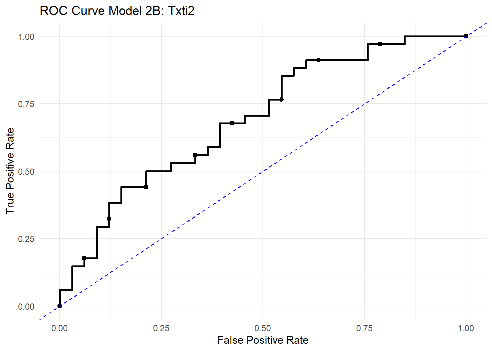
That’s not a bad curve!
set.seed(123)
# Create variable
data <- data |>
mutate(geom_avg = (geom1+geom2/2))
# Perform the linear regression using 5-fold CV
model2b_sat <- train(progression ~ txti2 + geom_avg + log(lbp5) + gabor3,
data = data,
method = "glm",
family = "binomial",
trControl = tc,
metric = "ROC",
preProc = "scale")
# Examine model
model2b_satGeneralized Linear Model
67 samples
4 predictor
2 classes: 'Slow', 'Fast'
Pre-processing: scaled (4)
Resampling: Cross-Validated (5 fold)
Summary of sample sizes: 54, 53, 53, 55, 53
Resampling results:
ROC Sens Spec
0.6654195 0.6047619 0.6190476summary(model2b_sat)
Call:
NULL
Coefficients:
Estimate Std. Error z value Pr(>|z|)
(Intercept) -0.28058 0.42210 -0.665 0.50622
txti2 -0.81344 0.31123 -2.614 0.00896 **
geom_avg -0.01038 0.26837 -0.039 0.96915
`log(lbp5)` -0.30809 0.29114 -1.058 0.28996
gabor3 0.10950 0.26274 0.417 0.67686
---
Signif. codes: 0 '***' 0.001 '**' 0.01 '*' 0.05 '.' 0.1 ' ' 1
(Dispersion parameter for binomial family taken to be 1)
Null deviance: 92.867 on 66 degrees of freedom
Residual deviance: 82.263 on 62 degrees of freedom
AIC: 92.263
Number of Fisher Scoring iterations: 4# Save predictions
data$predictions2b_sat <- predict(model2b_sat, newdata = data)
data$predictions2b_prob_sat <- predict(model2b_sat, newdata = data, type = "prob")[,2]
data$predictions2b_num_sat <- as.numeric(data$predictions2b_prob_sat)-1
# Create confusion matrix
cm <- table(Predicted = data$predictions2b, Actual = data$progression)
# Examine confusion matrix and performance
cm Actual
Predicted Slow Fast
Slow 20 12
Fast 13 22# Plot ROC Curve
roc2b <- ggplot(data, aes(m = predictions2b_num, d = progression_num)) +
geom_roc(n.cuts = 10, labels = F, labelround = 4) +
theme_minimal() +
labs(title = "ROC Curve Model 2B: Txti2",
x = "False Positive Rate",
y = "True Positive Rate") +
geom_abline(intercept = 0, slope = 1, linetype = "dashed", color = "blue")
# Visualize Plot
roc2b# Calculate area under the curve
calc_auc(roc2b)$AUC[1] 0.6934046Not that different from just txti2. I just wanted to check because I was getting the BIC backwards selection choosing this model.
Model 2B performs much better than model 2A. We can especially see this when we look at the ROC curve.
AUC: 0.74
Sensitivity: 0.57
Specificity: 0.64
Model 2C: Baseline Kidney Volume and MRI Image Features
To answer the researcher’s third question, we will run a predictive model that uses the baseline height-corrected total kidney volume AND MRI image features to predict slow vs fast disease progression.
\[ logit(Progression) = 𝛽_0 + 𝛽_{Baseline Kidney Volume} + 𝛽_{Txti2} + ... + e \]
set.seed(123)
# Perform the linear regression using 5-fold CV
model2c <- train(progression ~ log(kidvol_base) + txti2,
data = data,
method = "glm",
family = "binomial",
trControl = tc,
metric = "ROC",
preProc = "scale")
# Examine model
model2cGeneralized Linear Model
67 samples
2 predictor
2 classes: 'Slow', 'Fast'
Pre-processing: scaled (2)
Resampling: Cross-Validated (5 fold)
Summary of sample sizes: 54, 53, 53, 55, 53
Resampling results:
ROC Sens Spec
0.7064626 0.5666667 0.5857143summary(model2c)
Call:
NULL
Coefficients:
Estimate Std. Error z value Pr(>|z|)
(Intercept) 3.2899 3.2933 0.999 0.31781
`log(kidvol_base)` -0.2757 0.2768 -0.996 0.31912
txti2 -0.8901 0.3106 -2.866 0.00416 **
---
Signif. codes: 0 '***' 0.001 '**' 0.01 '*' 0.05 '.' 0.1 ' ' 1
(Dispersion parameter for binomial family taken to be 1)
Null deviance: 92.867 on 66 degrees of freedom
Residual deviance: 82.711 on 64 degrees of freedom
AIC: 88.711
Number of Fisher Scoring iterations: 4The model performs similarly to using txti2 alone.
The AUC is 0.71, the sensitivity is 0.57, and the specificity is 0.59
Confusion Matrix
# Save predictions
data$predictions2c <- predict(model2c, newdata = data)
data$predictions2c_prob <- predict(model2c, newdata = data, type = "prob")[,2]
data$predictions2c_num <- as.numeric(data$predictions2c_prob)-1
# Create confusion matrix
cm <- table(Predicted = data$predictions2c, Actual = data$progression)
# Examine confusion matrix and performance
cm Actual
Predicted Slow Fast
Slow 22 13
Fast 11 21Not much different than model 2.
ROC Curve
# Plot ROC Curve
roc2c <- ggplot(data, aes(m = predictions2c_num, d = progression_num)) +
geom_roc(n.cuts = 10, labels = F, labelround = 4) +
theme_minimal() +
labs(title = "ROC Curve Model 2C: Baseline Kidney Volume and Txti2",
x = "False Positive Rate",
y = "True Positive Rate") +
geom_abline(intercept = 0, slope = 1, linetype = "dashed", color = "blue")
# Visualize Plot
roc2cNot much different than just using txti2 alone.
Model C does not appear to perform much differently than model B.
AUC: 0.71
Sensitivity: 0.57
Specificity is 0.59
Model Comparison
# Create list of models to compare
model_list <- list(`Kidney Volume at Baseline` = model2a, Txti2 = model2b, `Kidney Volume at Baseline and Txti2` = model2c)
# Compare models
results <- resamples(model_list)
summary(results)
Call:
summary.resamples(object = results)
Models: Kidney Volume at Baseline, Txti2, Kidney Volume at Baseline and Txti2
Number of resamples: 5
ROC
Min. 1st Qu. Median Mean
Kidney Volume at Baseline 0.3469388 0.4081633 0.4761905 0.4746032
Txti2 0.5555556 0.6428571 0.6938776 0.7376417
Kidney Volume at Baseline and Txti2 0.5833333 0.6428571 0.6530612 0.7064626
3rd Qu. Max. NA's
Kidney Volume at Baseline 0.5306122 0.6111111 0
Txti2 0.7959184 1.0000000 0
Kidney Volume at Baseline and Txti2 0.6734694 0.9795918 0
Sens
Min. 1st Qu. Median Mean
Kidney Volume at Baseline 0.0000000 0.2857143 0.2857143 0.3000000
Txti2 0.1428571 0.1666667 0.6666667 0.5666667
Kidney Volume at Baseline and Txti2 0.1666667 0.2857143 0.6666667 0.5666667
3rd Qu. Max. NA's
Kidney Volume at Baseline 0.4285714 0.5 0
Txti2 0.8571429 1.0 0
Kidney Volume at Baseline and Txti2 0.7142857 1.0 0
Spec
Min. 1st Qu. Median Mean
Kidney Volume at Baseline 0.5714286 0.5714286 0.7142857 0.7142857
Txti2 0.4285714 0.5000000 0.7142857 0.6428571
Kidney Volume at Baseline and Txti2 0.4285714 0.4285714 0.5000000 0.5857143
3rd Qu. Max. NA's
Kidney Volume at Baseline 0.7142857 1.0000000 0
Txti2 0.7142857 0.8571429 0
Kidney Volume at Baseline and Txti2 0.7142857 0.8571429 0results$models[1] "Kidney Volume at Baseline" "Txti2"
[3] "Kidney Volume at Baseline and Txti2"# Compare the AUCs
diffs <- diff(results)
summary(diffs)
Call:
summary.diff.resamples(object = diffs)
p-value adjustment: bonferroni
Upper diagonal: estimates of the difference
Lower diagonal: p-value for H0: difference = 0
ROC
Kidney Volume at Baseline Txti2
Kidney Volume at Baseline -0.26304
Txti2 0.2809
Kidney Volume at Baseline and Txti2 0.3134 0.8648
Kidney Volume at Baseline and Txti2
Kidney Volume at Baseline -0.23186
Txti2 0.03118
Kidney Volume at Baseline and Txti2
Sens
Kidney Volume at Baseline
Kidney Volume at Baseline
Txti2 0.4126
Kidney Volume at Baseline and Txti2 0.2756
Txti2
Kidney Volume at Baseline -0.2666666666666666630
Txti2
Kidney Volume at Baseline and Txti2 1.0000
Kidney Volume at Baseline and Txti2
Kidney Volume at Baseline -0.2666666666666666630
Txti2 -0.0000000000000000111
Kidney Volume at Baseline and Txti2
Spec
Kidney Volume at Baseline Txti2
Kidney Volume at Baseline 0.07143
Txti2 1
Kidney Volume at Baseline and Txti2 1 1
Kidney Volume at Baseline and Txti2
Kidney Volume at Baseline 0.12857
Txti2 0.05714
Kidney Volume at Baseline and Txti2 # Plot RMSEs of each model
dotplot(results, metric = "ROC",
main = "Comparison of AUC Across Models")dotplot(results, metric = "Sens",
main = "Comparison of Sensitivity Across Models")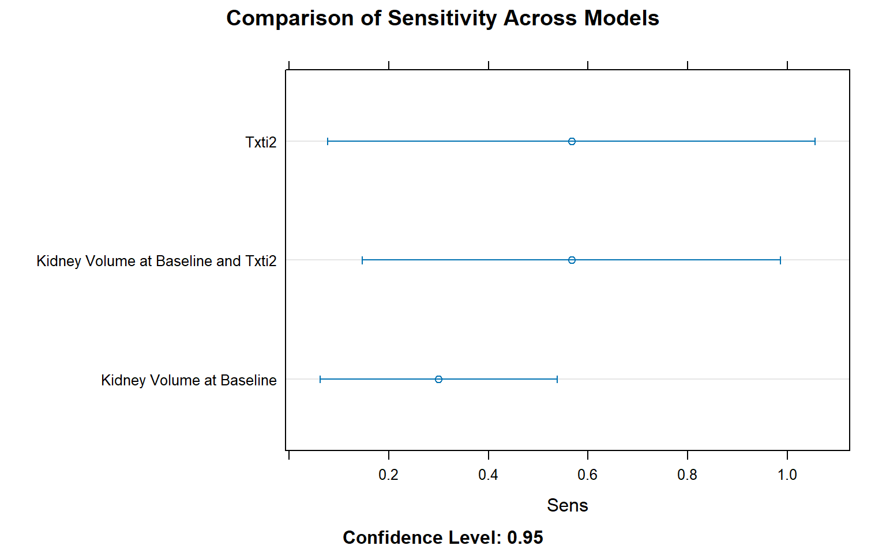
dotplot(results, metric = "Spec",
main = "Comparison of Specificity Across Models")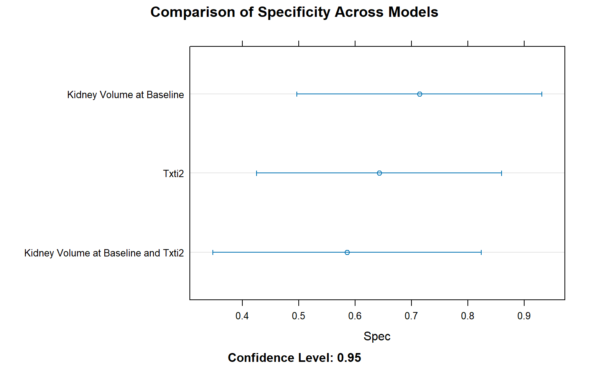
The difference in performance between models was not statistically significant (report AUC’s and 95% CI’s here)
Results
Table 2. Results of Pairwise T-Tests Comparing Model Performance Predicting Disease Progression using AUC
| Model | AUC | Sensitivity | Specificity | P-Adjusted |
| Baseline Kidney Volume | 0.47 | 0.30 | 0.71 | — |
| Txti2 | 0.74 | 0.57 | 0.64 | 0.28 |
| Baseline Kidney Volume and Txti2 | 0.71 | 0.57 | 0.59 | 0.31 |
Summary
The model using txti2 alone performed better at predicting disease progression than the model using kidvol_base alone. However, this difference was not statistically significant.
Additionally, the model incorporating both txti2 and kidvol_base did not perform better than the model using just txti.
However, examining the ROC curves and the 95% CIs for all of the models, it does appear that there is a trend towards these difference being significant. It is possible that these may have not been statistically significant due to a small sample size (N = 67).
Results
Predicting Height-Corrected Kidney Volume
To evaluate whether differences in model performance were statistically significant, RMSE for each model were compared using pairwise t-tests with Bonferroni correction for p-values. The differences in model performance were not statistically significant (see Table 1 and Figure 1). Model A (Baseline only) had a 0.37 higher RMSE compared to model B (Txti2 only) (p = 0.68), and a 0.38 higher RMSE compared to model C (Mixed) (p = 0.75).

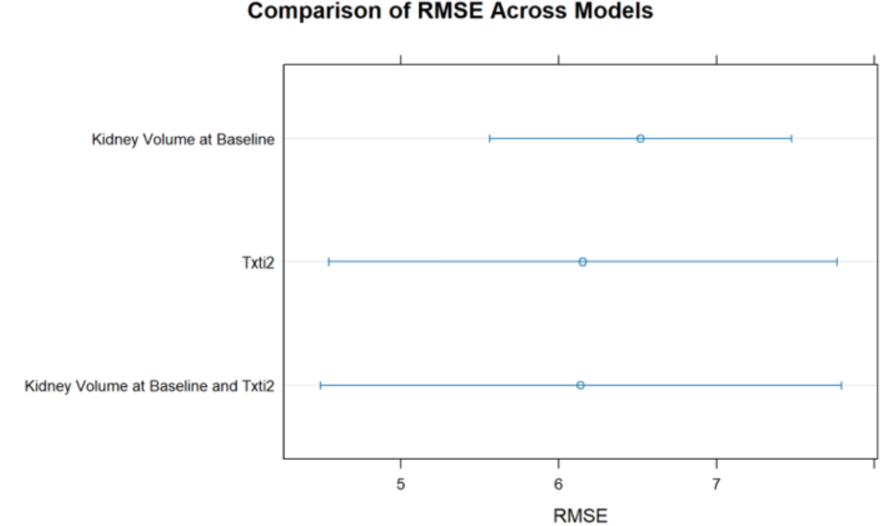
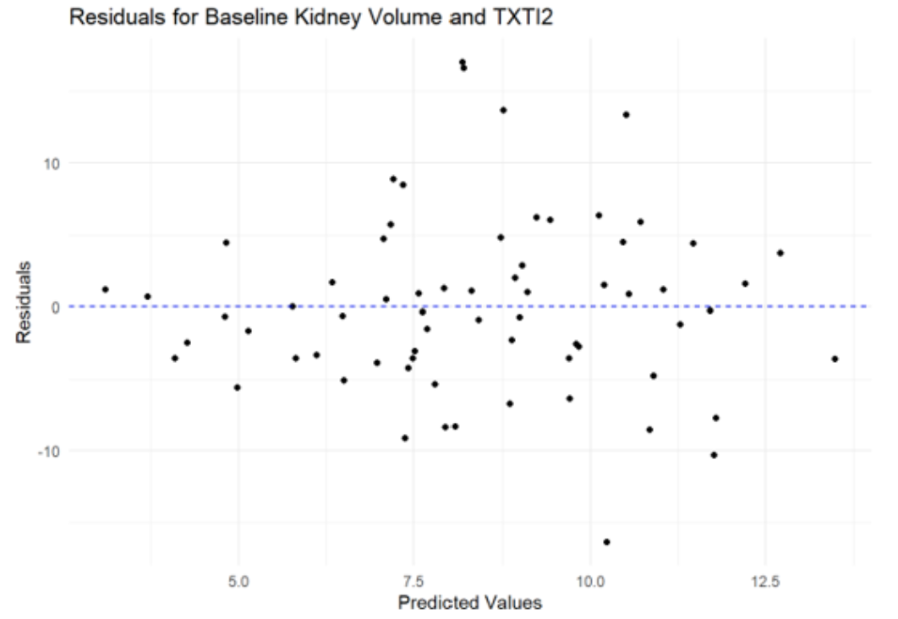
Predicting Disease Progression
To evaluate whether differences in model performance were statistically significant, AUC for each model was compared using pairwise t-test with Bonferroni correction for p-values, and ROC curves for each model were plotted (see Table 2 and Figure 2). The models using Txti2 alone (AUC = 0.74), or Txti2 and baseline kidney volume (AUC= 0.71), performed better at predicting disease progression speed than the model using baseline kidney volume alone (AUC 0.47). However, these differences were not statistically significant (p > 0.05).
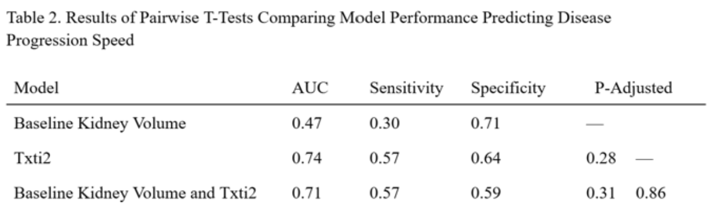
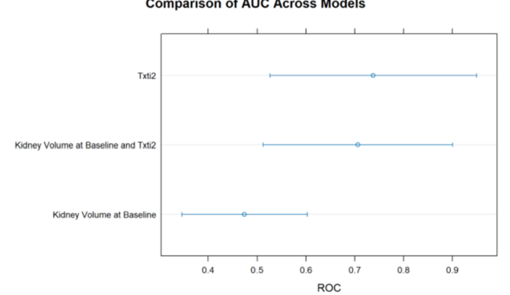
ROC Curves
# Example Data: Combine predictions into a single data frame
data_for_ROC <- data.frame(
progression_num = data$progression_num, # Your actual outcomes
`Baseline Kidney Volume` = data$predictions2a_num,
`Txti2` = data$predictions2b_num,
`Baseline Kidney Volume and Txti2` = data$predictions2c_num
)
# Melt the data frame for ggplot
data_melted <- melt(data_for_ROC, id.vars = "progression_num", variable.name = "model", value.name = "predictions")
# Plot ROC Curves
roc_plot <- ggplot(data_melted, aes(m = predictions, d = progression_num, color = model)) +
geom_roc(n.cuts = 10, labels = FALSE, labelround = 4) +
theme_minimal() +
labs(title = "ROC Curves for Models Predicting Kidney Disease Progression",
x = "False Positive Rate",
y = "True Positive Rate",
color = "Model") +
geom_abline(intercept = 0, slope = 1, linetype = "dashed", color = "black") +
scale_color_brewer(palette = "Set2") +
theme( text = element_text(size = 15))
# Visualize Plot
roc_plot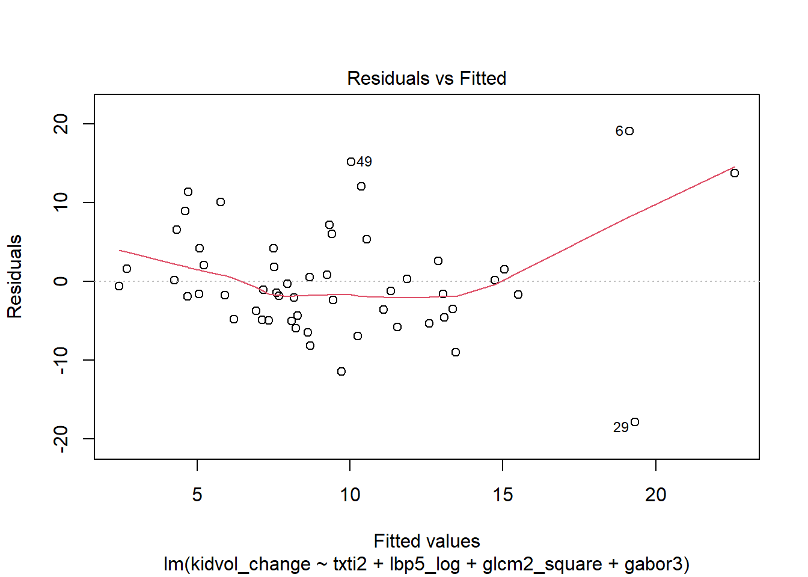
Discussion
Note: Discussion section co-written with project partner Dominick DeMarsico.
After review of the many MRI image transformations available to the team, none of the feature engineering conducted stood out as particularly meaningful or helpful for prediction. However, the Txti2 variable was specifically created by the PI to be a summary value for kidney images. To avoid overfitting, we thought it best to primarily focus on this variable as our other variables of interest were not particularly associated with the outcome variables. With regard to our linear regression modeling, we found that none of the models were statistically better at predicting kidney change over time. Thus, including MRI image features did not increase the predictive capability of a model predicting kidney volume at 3 years above and beyond that of just using kidney volume measurements at baseline. Given the time and money needed to both collect MRI images and process them into usable formats, it may be more efficient to simply focus on measuring kidney volume in children with ADPKD. Given this outcome, we fail to reject the null hypothesis or question 1.
With regard to our logistic regression, we found that none of the models were statistically different from one another when comparing AUC. However, the combined model and the model containing solely Txti2 were approaching significance when compared to the baseline kidney volume in a Two Sample T-Test (figure 2.). Given our small sample size, it is possible that a larger N would lead to this effect becoming statistically significant. Thus, even though we failed to reject the null hypothesis for our given sample size, utilizing the MRI image feature of Txti2 in our model allows us to achieve an AUC of > 0.70, yielding drastically better performance than the near-guess level performance of the model using baseline kidney volume alone (AUC = 0.47). Additionally, we believe this stark trend to be clinically significant as it provides significantly better outcomes at the higher end of the confidence interval.
The study’s primary limitation is sample size. It is difficult to make exceptionally accurate models without exceptionally large amounts of data; we would expect a higher degree of accuracy if our N was significantly larger. Additionally, we were not given demographic variables for subject sex, age, and eGFR (estimated glomerular filtration rate), which are significant predictors of ADPKD. We suspect that these additional factors in conjunction with the MRI image feature Txti2 would produce a more robust model.
References
(Fogel and Sagi 1989) [Kumar, Satyanarayana, and Prasad (2020)](Haralick, Shanmugam, and Dinstein 1973) (Ojala, Pietikainen, and Maenpaa 2002)
References
Fogel, I., and D. Sagi. 1989. “Gabor Filters as Texture Discriminator.” Biological Cybernetics 61 (2): 103–13. https://doi.org/10.1007/bf00204594.
Haralick, Robert M., K. Shanmugam, and Its’Hak Dinstein. 1973. “Textural Features for Image Classification.” IEEE Transactions on Systems, Man, and Cybernetics SMC-3 (6): 610–21. https://doi.org/10.1109/tsmc.1973.4309314.
Kumar, D. Maruthi, D. Satyanarayana, and M. N. Giri Prasad. 2020. “An Improved Gabor Wavelet Transform and Rough K-Means Clustering Algorithm for MRI Brain Tumor Image Segmentation.” Multimedia Tools and Applications 80 (5): 6939–57. https://doi.org/10.1007/s11042-020-09635-6.
Ojala, T., M. Pietikainen, and T. Maenpaa. 2002. “Multiresolution Gray-Scale and Rotation Invariant Texture Classification with Local Binary Patterns.” IEEE Transactions on Pattern Analysis and Machine Intelligence 24 (7): 971–87. https://doi.org/10.1109/tpami.2002.1017623.